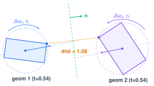
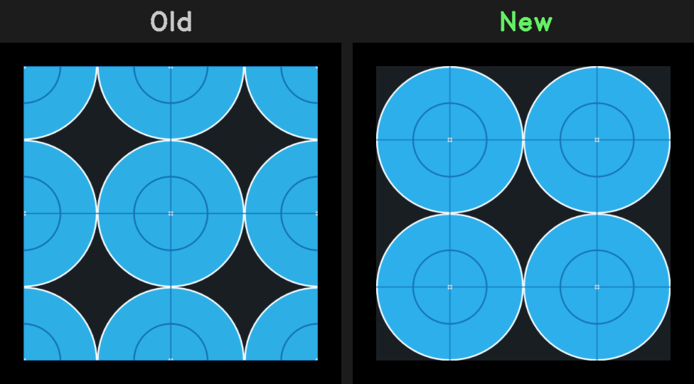
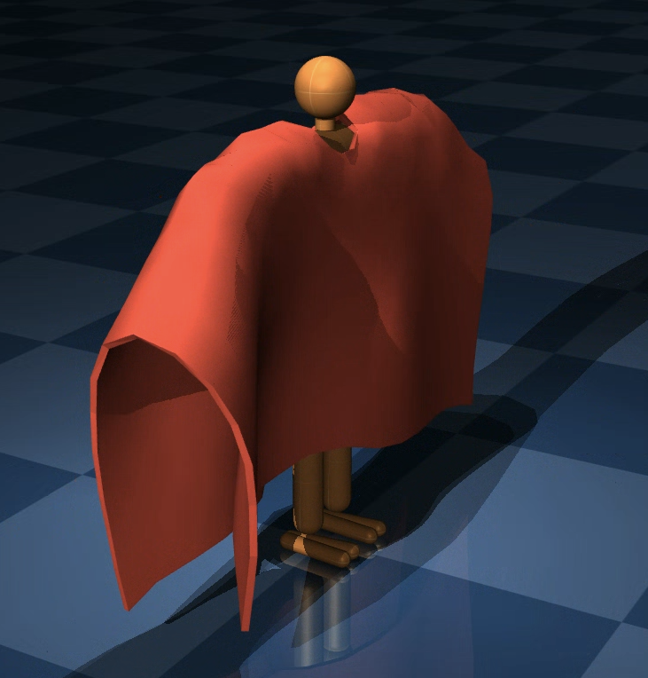
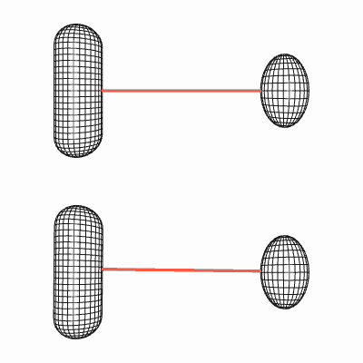
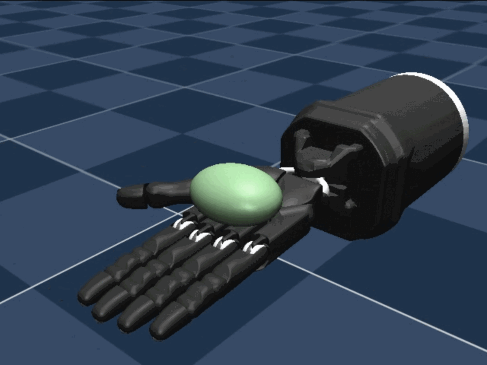
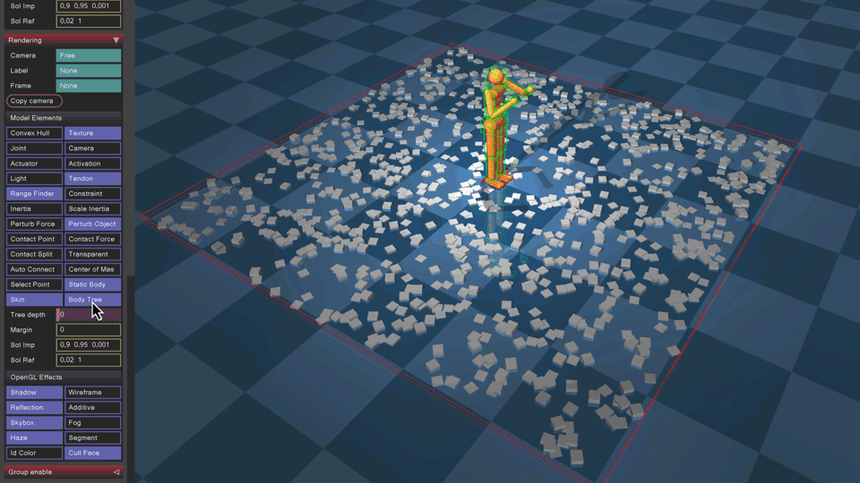

Changelog#
Version 4.0.1 (November 11, 2026)#
Compiler#
21a076966 Added mjs_getInStringVec to read entries from an mjStringVec by index.
Python bindings#
a937a4f91 Enabled the MuJoCo Studio Web Viewer (
mujoco-studio --gfx=webandmujoco.studio.launch_web) on Windows by shipping the precompiled browser client in a platform-independentmujoco-studio-wasmwheel installed automatically bymujoco-studio.
Bug fixes#
9ae9bad01 Fixed a bug in the sparse Cholesky factorization introduced in 4.0.0, which merged rows with different descendants into one supernode and gave the Newton solver a wrong Hessian factor when the constraint Jacobian is sparse, causing slow convergence, wrong accelerations and divergence (issue #3767).
144ede984 mj_loadAllPluginLibraries now skips a dynamic library that fails to load with a warning instead of calling mju_error, so one unloadable library in the plugin directory no longer aborts simulate at startup. In the 4.0.0 macOS and Linux archives this happened with the USD decoder plugin, which can only be loaded from a Python process.
409f981ab Fixed issues in single-shot multicontact for cylinder edge collisions (issue #3748, issue #3752).
Version 4.0.0 (November 6, 2026)#


Significant new features#
89daf8d19 Added the speculative enable flag for speculative contacts to prevent fast-moving convex geoms from tunneling through thin obstacles within a single timestep. On the right, one step of conservative advancement between two rotating boxes. See model/speculative/ for examples.
Added elasto-plasticity, with stateful plastic deformation stored in
mjData.plastic(mjSTATE_PLASTIC):e140c026f Ideal elasto-plasticity for joint (springyield) and tendon (spatial, fixed) springs (left).
0c0f63b3f, c39fe6f02, e3bd72742, 7cb32488b Continuum elasto-plasticity (yield) for 2D and 3D flexes, with separate stretching and bending yield strains for 2D shells, volumetric-deviatoric (von Mises \(J_2\)) stretching and 2D shell bending return mapping (right).
See model/plastic/ for examples.


abaf8d518 Split the Python distribution into
mujoco-core(minimal bindings and C library depending only onnumpy),mujoco-studio(Studio and Filament renderer bindings), andmujoco(default package installing both). When upgrading from a pre-splitmujocoinstallation withpip, uninstall first (pip uninstall -y mujoco && pip install mujoco) or runpip install --force-reinstall --no-deps mujoco mujoco-core mujoco-studioafter upgrading sopipdoes not remove files moved tomujoco-core. To switch an existingmujocoinstallation to core-only, runpip uninstall -y mujoco mujoco-studio && pip install --force-reinstall --no-deps mujoco-core.
Engine#
Breaking changes
a65050166 Changed the semantics of sidesite: the tendon now goes around the geom the same way as the path from the first endpoint, through the side site, to the second endpoint (thin grey line below). Formally, the tendon is the shortest path homotopic to this polyline in the wrapping plane with the geom removed.


Previously, a half-plane test was used, which could make the tendon jump onto the geom, a discontinuity in tendon length, when the segment between the endpoints moved away from the side site while clear of the geom. It could also select the wrong side for wraps longer than 180 degrees. Top row: old rule; bottom row: new rule.


The new rule has a single discontinuity: when an endpoint crosses the ray opposite the side site, the path through the side site changes its winding around the geom and the tendon snaps off. This can change the behavior of existing models.
Migration: Place side sites so that the endpoints do not cross this ray over the range of motion, typically near the middle of the wrapped arc. For example, the side sites of the two-link arm were moved from directly below the joints to 45 degrees below the arm, which reproduces the previous tendon lengths exactly.
9a7f240f0 The
RK4integrator is now fourth-order accurate for the orientations of ball and free joints. Previously, the angular velocities of the Runge-Kutta stages were combined without the Runge-Kutta-Munthe-Kaas correction, so orientations converged only at second order. This changes the simulation of models with ball or free joints that useRK4.9916cc5f7 Added
surfacevel[3]to mjContact, storing the relative surface velocity (geom[1]minusgeom[0]) in the contact frame(tangent1, tangent2, spin). Collision detection populates it fromgeom_surfacevelwhenmjModel.flg_surfacevelis set, and external contact generators can write it directly (settingflg_surfacevel = 1if no geom specifiessurfacevel). Contact-point visualization now draws a single relative tangential velocity arrow per active frictional contact.629feb74b Added
xiquat,geom_xquat, andsite_xquatto mjData, storing the Cartesian quaternion orientations of body inertias, geoms, and sites alongsideximat,geom_xmat, andsite_xmat.64af6504f Added
mjModel.tendon_typewith values from the new mjtTendon enum, distinguishing fixed and spatial tendons. Previously, the type was implied by whether the first path element was a joint.
Deformables#
Breaking changes
1d6cc8ff5 Removed the
cableplugin (plugin/elasticity) and thecompositeelement, which are superseded by 1D flexcomp with elasticity.Migration:
countandcurve/size/vertex: use flexcompdim="1"withtype="grid",count, andspacing(ortype="circle"for closed loops), ortype="direct"withpoint. Add<edge equality="true"/>to keep edges inextensible.Geom
size(capsule radius): set flexcompradius. For geomtype="box", set<elasticity section="box" sectionsize="..."/>.Plugin
bendandtwist: set<elasticity young="..." shear="..."/>.Root attachment
initial:initial="none"maps to<pin id="0 1"/>(clamps the first edge’s material frame to the parent body and omits<name>_twist_0);initial="ball"maps to<pin id="0"/>(spherical anchor at the first vertex, keeping<name>_twist_0free);initial="free"maps to no<pin/>.Plugin
flat="true": define the rod straight inqpos0(e.g.,type="grid") and set the curved initial pose viaqposor a keyframe (curves defined directly inpointare at rest inqpos0, corresponding toflat="false").Plugin
vmaxstress coloring: not supported.Integrator: use
integrator="discrete"for implicit integration (orEuler/RK4;implicitandimplicitfastare not supported for 1D rod elasticity).Body names
B_first/B_<i>/B_last: unpinned vertices create bodies<name>_<i>(pinned vertices attach directly to the parent body), plus per-edge twist bodies and joints (see the next entry).
95cf15e58 Open elastic 1D flexcomps with at least two elements now create per-edge twist bodies with hinge joints
<name>_twist_0, …,<name>_twistunder the world body (omitting the joint of an edge clamped by pinning both of its points:<name>_twist_0for<pin id="0 1"/>, and<name>_twistfor the last two points of a rod with at least three elements), and store their time-parallel reference frames and reference twists inmjData.plastic. This changesnq,nv,nbody,nplasticand theqposlayout of such models, shifts the indices of bodies and joints declared after the flexcomp, and changes the simulation: rods now roll on surfaces and twist in grippers. Box sections (section box) require these joints, so raw flexes with box sections now need them too, and their collision radius is set to the minor half-size of the section (an explicit radius that differs from it is now a compile error).Migration: Update keyframes and any code that indexes
qpos,qvelor bodies by number, preferably addressing vertex bodies (<name>_<i>) and twist joints by name. Save and restore rod state withmjSTATE_PLASTIC. Raw box-section flexes need hinge joints named as above (see elasticity).7ba52b533 Fixed the elastic constants of non-interpolated flexes (full and radial dofs), which now match young, poisson and thickness as documented, and the interpolated flexes:
3D Saint Venant-Kirchhoff stretching used twice the first Lamé parameter \(\lambda\).
2D stretching used a quarter of the shear modulus \(\mu\) and half of the 3D \(\lambda\), instead of \(\mu\) and the plane-stress \(\lambda^* = E \nu / (1 - \nu^2)\).
2D bending used \(\tfrac{3}{4}(1-\nu) D\) instead of the plate bending rigidity \(D = E t^3 / (12 (1 - \nu^2))\).
Models with these flexes become stiffer, except 3D models with zero Poisson’s ratio, which are unchanged.
Migration: To keep the previous behavior, use these parameters:
3D: \(\nu' = 2\nu / (1 + 2\nu)\) and \(E' = E (1 + \nu') / (1 + \nu)\).
2D bending only (
elastic2d="bend"): \(E' = \tfrac{3}{4}(1 - \nu) E\).2D stretching (
elastic2d="stretch"or"both"): \(\nu' = 2\nu\), which is exact for \(\nu < 1/4\) (so that \(\nu' < 1/2\)). Then:"stretch": \(E' = E (1 + 2\nu) / (4 (1 + \nu))\)."both": \(t' = t \sqrt{3 (1 - 2\nu)}\) and \(E' = E t (1 + 2\nu) / (4 (1 + \nu) t')\).
The flex models in
model/flexwere remapped in this way, so their behavior is unchanged.c0e6b15fd 1D rod bending elasticity (
dim="1"with positiveyoung) is no longer supported underimplicitandimplicitfast, matching 2D and 3D flex elasticity.Migration: Use
integrator="discrete"for implicit integration, orintegrator="Euler"with a small timestep for explicit integration.c0e6b15fd Flex edge stiffness and damping are no longer supported under
integrator="discrete"(where they were integrated explicitly rather than in the effective metric).Migration: Use elasticity (or edge equality), or use
Euler/RK4/implicitfast.b2577a630 Unpinned flexcomp models (with full, trilinear, or quadratic dofs) now fail to compile if their parent or ancestor body has joints when no active vertices or nodes are pinned to it.
Migration: Remove joints from the parent/ancestor body of an unpinned flex, or pin at least one vertex/node to the parent body with pin.
145cdc2be Removed
flexvertequality constraints (<equality><flexvert>and<edge equality="vert"/>in flexcomp), along with the associated mjModel fields (nJfv,flex_vertedgeadr,flex_vertedgenum,flex_vertedge,flex_vertmetric,flexvert_J_rownnz,flexvert_J_rowadr,flexvert_J_colind) and mjData fields (flexvert_length,flexvert_J).mjEQ_FLEXVERTis retained as an unsupported placeholder in mjtEq and causes an error if used.Migration: Use continuum elasticity with
integrator="discrete"or edge equality for 2D cloth models.6f28d4adf Flexes now support per-element visual materials:
mjModel.flex_matidis now(nflexelem x 1)instead of(nflex x 1), and thematerialattribute on flex and flexcomp (mjsFlex.material) is nowmjStringVecrather thanmjString(accepting either a single material name broadcast to all elements or one material name per element).Migration: Index
mjModel.flex_matidby elementm->flex_elemadr[f] + erather than by flexf. In C, setmjsFlex.materialwithmjs_setStringVec(ormjs_appendString) instead ofmjs_setString; in Python, assign a list of material names (e.g.flex.material = ['mat']).7ba5d6732 Records of 1D flexes in
mjModel.flex_bendinggrow from 4 to 10 values, to store curved reference configurations and pairs of adjacent bent vertices. Previously, each record was[v_prev, v, v_next, k].Migration: Read 1D records with stride 10. A record whose fourth value is negative is a single hinge
[v0, v1, v2, -1, k1, k2 - k1, |kb0|, jnt, kt, b]: principal bending stiffnessesk1 <= k2, the twist hinge jointjntof the edge(v1, v2)(-1 if none; the joint of the first edge, when present, is that of the first record minus one), torsional stiffnesskt, and the signed minor half-sizebof a box section (0 for circular sections). Otherwise it is a hinge pair[v0, v1, v2, v3, w0, w1, om0[4]].
8892bf44b, 0d8a109de, f9a589361 Sparse
Newton(solver) is 1.4-3x faster on flex models, using fill-reducing DOF ordering, incremental active-set Hessian updates, direct elliptic cone folding, and pre-ordered sparse Cholesky for the 2Ddiscreteintegrator smooth solve. Most flex models inmodel/flexnow usesolver="Newton", and the experimental ipc flag now supportssolver="Newton"in addition tosolver="CG".57d9b960f
solver="Newton"with thediscreteintegrator now supports flex vertices and nodes (both standard and interpolated) attached to articulated bodies. Previously, such models requiredsolver="CG". Themodel/flex/gripper_trilinear.xmlgripper now usessolver="Newton". MuJoCo Warp still requiressolver="CG"for such models.7ba5d6732 1D rod bending elasticity now supports curved reference configurations and torsional stiffness: vertices bent by more than \(10^{-4}\) rad in
qpos0keep their reference curvature and dihedral twist angle, so that rods such as rings, arcs, and coil springs are at rest in their compiled shape. Previously, such models failed to compile. The new shear attribute optionally overrides the shear modulus used for torsion. Open rods carry per-edge twist joints (see the breaking change above) with per-edge polar inertia, frame-indifferent relative Rayleigh torsional damping, time-parallel reference frames, and frictional contact lever-arm coupling. Box sections additionally use anisotropic principal stiffnesses with equalized damping ratio (\(\sqrt{k_1 k_2}\) on the weak axis) and an oriented box in the DER material frame for rendering and collision detection. See the documentation.9ca6b7171 Volumetric interpolated flexes (trilinear or quadratic dofs with
elastic2d="none") now integrate cell stiffness and lump nodal masses over the mesh volume using Finite Cell Method (FCM) subcell quadrature instead of treating every non-empty grid cell as a full cube. This changes the stiffness and nodal mass distribution of volumetric interpolated flexes whose mesh does not fill its bounding box, as well as the nodal mass distribution of multi-cell trilinear flexes.f9f3ee653 Contacts with flex elements now distribute the contact to the element vertices with the barycentric coordinates of the point on the element closest to the contact. Previously the vertex weights were inversely proportional to the distances from the contact, which do not interpolate the contact point: the contact Jacobian measured the velocity of a different material point, and the contact force exerted a spurious torque on the element. This changes the simulation of models with flex contacts.
115907e6d Interpolated flexes (trilinear or quadratic dofs) now support passive contact.
51572eab0 Flex edge damping is now integrated explicitly under
implicitandimplicitfast(previously it also damped rigid translation).9fb4eca48 Fixed contact Jacobians of quadratic flexes, which dropped nodes with negative basis weights.
b16e09838 Sphere and capsule contacts with 3D flex elements are now computed analytically instead of the general convex pipeline.
3bbf510d4 Improved numerical stability of nativeccd convex collision detection and multiccd contact generation. This can slightly change contacts for models with convex or mesh collisions.
Compiler#
Breaking changes
00057bcef Models that include the same file through different paths, which previously loaded, are now rejected with
already included.Migration: Remove redundant
<include>elements referencing the same file.The compiler now rejects the following invalid models, which previously loaded:
b6192732b Height fields with nrow or ncol less than 2.
a4c699040 Fixed tendons referencing
ball/freeor duplicate joints, or with negative armature.a4c699040 Spatial tendon pulleys with non-positive divisor.
a4c699040 camprojection or camera-attached rangefinder sensors referencing an invalid camera or a camera with non-positive resolution.
881e53e2e mjs_makeMesh
mjMESH_BUILTIN_CONEcalls with fewer than 3 edges orradiusoutside[0, 1].
Migration: Ensure height fields have
nrow >= 2andncol >= 2, fixed tendons wrap distinctslideorhingejoints with non-negative armature, pulley divisors are positive, cameras referenced bycamprojectionorrangefindersensors have positive resolution, skin face indices are in[0, nvert), and cone meshes have at least 3 edges and a radius in[0, 1].
432376a59 fullinertia and inertias inferred from geoms which are not positive definite are now bounded by boundinertia when it is positive. Previously they gave a compile error.
a4c699040 mj_encode now supports binary MJB output for mjSpec via the
model/vnd.mujoco.mjbcontent type.
Rendering#
1edd2c67d Added a castshadow attribute to geom (
mjsGeom.castshadow,mjModel.geom_castshadow,mjvGeom.castshadow; defaulttrue) to disable shadow casting per geom in both the classic OpenGL and Filament renderers, and mjrf_setRenderableCastShadow (mjrf.Renderable.set_cast_shadowin Python) to toggle shadow casting of Filament renderables dynamically.c831b97d6 Added horizon haze and skybox visibility support to Filament rendering: infinite planes are centered beneath the camera and blend smoothly into the skybox horizon according to visual/map/haze and visual/rgba/haze, toggled per view via
hazeandskyboxon mjrfRenderRequest (mjRND_HAZE and mjRND_SKYBOX).939bc882e When no light specifies an intensity, the fallback intensity given to each light in Filament rendering is now scaled by the brightness of its diffuse color, which is factored out of the light’s color. Lights look the same, but the brightest directional light now casts the shadows, rather than an arbitrary one that could differ between runs.
0fc0b44d6 Added filament.material.base_color_type flag for configuring how the base color material parameter is interpreted.
e19117325 Added mjrf_flush (
mjrf.Context.flushin Python) to flush pending operations to the rendering backend and invoke any completed callbacks.93033f5ba Added mjRND_POST_PROCESSING rendering flag.
e66b53380 Allow headlight.active to be set to “false”, “true”, or “auto” while continuing to support integer values (0=false, 1=true, 2=auto). Change the default to “auto” instead of “true”.
Python bindings#
68390c316 Removed support for Python 3.10, now that it’s deprecated upstream.
a1b9fce44 Bundled the MuJoCo Sphinx manual (
doc/**/*.rst) and agent skills (doc/skills/**/*.md) inside themujocopackage undermujoco/doc/.
Samples#
Breaking changes
006586d30 Removed
sample/record.cc; multi-frame raw RGB24 video recording is now supported by sample/render.cc across both the Filament and classic OpenGL backends via--durationand--fps.Migration: Replace
record model.xml T F out.rgb 0withrender model.xml out.rgb --duration=T --fps=F(or pass-as the output path to pipe top-down RGB24 frames directly toffmpeg;vflipis no longer needed).
Models#
9647e0290 Added six elasto-plasticity example models, each placing an elastic reference next to a plastic counterpart: joint and tendon springs, 2D shells and 3D continua.
89daf8d19 Added speculative contacts example models: a Newton’s cradle of thin plates, an interlocking chain, and a ball struck by a hinged flipper.
Documentation#
74ad32d20 Added documentation for MuJoCo Studio, covering web and native viewers, architecture, and Python and C++ development.
0f1092ebb Added a Model tuning guide to the Modeling chapter—covering the fidelity–speed trade-off, tuning defaults, priority-ordered global and model-level parameters, deformables, and system identification—along with module documentation for mujoco.sysid.
Bug fixes#
fdf141238 accelerometer and framelinacc sensors and mj_objectAcceleration on static and mocap bodies now report the gravitational proper acceleration, like a dynamic body at rest. Previously they returned zero, a regression introduced in 3.3.7.
c4137ef7c, aeb871ba1 Actuators saturated by joint or tendon actuator force limits (joint and tendon actuatorfrcrange) no longer contribute implicit actuator derivatives, changing integration under
implicit,implicitfast, anddiscrete. Because saturated actuators no longer contribute implicit damping, models with light links and no armature may need joint armature or a smaller timestep.aaf2abaa7, 1b46a496e Fixed sleep filtering bugs in history sensors (nsample, delay, interval), mj_energyPos, flex passive forces, tendon limit and frictionloss constraints, two-tree tendon armature and bias, mj_subtreeVel, and caller-supplied mj_rne buffers.
13fb7844e mj_setConst now wakes all sleeping trees, since it recomputes their kinematics at
qpos0andqpos_spring. Previously their cached poses could be left atqpos_spring. It also no longer overwritescam_xpos,cam_xmat,light_xposandlight_xdirin mjData, which left static cameras and lights with tracking or targeting at their fixed-mode poses.432376a59 Contact pairs created with an undefined
mjsPair.solrefnow mix thesolrefof their geoms usingsolmixwhen both are positive, like contacts not defined by pairs. Previously they always took the element-wise minimum.18d65f4e0, ea6aa8214 Filament depth and segmentation renders no longer apply post-processing (tone mapping, dithering), which corrupted depth values and segment ID colors; perspective depth renders now project with the finite zfar plane instead of Filament’s infinite far plane, matching orthographic depth and the classic renderer; and the
mjr_compatibility API now respectsreadDepthMap(mjtDepthMap) on mjrContext in mjr_readPixels and colors geoms bysegid + 1like mjRND_IDCOLOR so a geom withsegid0 no longer renders as background.9b19fd07c, ef34acbee File paths on Windows are now interpreted as UTF-8 rather than the active ANSI code page, fixing loading and saving files, plugin library discovery and loading (mj_loadPluginLibrary, mj_loadAllPluginLibraries), and simulate executable directory lookup when paths contain non-ASCII UTF-8 characters (issue #3139). Contribution by @mar-yan24.
a5ff8f6c7 Fixed dcmotor parameter handling: allow zero motorconst for
input="none", reject negative constants (e.g.motorconst="-a b"is now rejected instead of silently usingK = b), replace capacitance when an inconsistent thermal triple is given, clear inherited forcerange when saturation is authored, let zerosaturationorinductanceclear class defaults, and validate actdim at compile time.8694cc9ce Improved numerical stability of sphere and cylinder spatial tendon geom wrapping at wrap onset. Thanks to @M-Colley for reporting and analyzing the issue in MJWarp issue 1772.
b6192732b mj_ray now scales SDF hit distances by
1 / ||vec||for non-unit ray vectors, andmju_rayTrianglerejects triangle intersections behind the ray origin.00c19f04b mj_resetData, mj_copyData, and mj_recompile now preserve the destination mjData thread pool instead of dropping and leaking it.
a206daa42
mju_mat2Rotnow normalizes the input quaternion and escapes 180-degree stationary points (saddles and minima) that do not maximize \(\operatorname{tr}(R^\top M)\).afa16414c Fixed the cotangent weight and length scale of the curved reference term of 2D flex bending (elastic2d bend or both), so out-of-plane bending forces vanish at curved rest configurations and scale consistently with model size.
a4c699040 Fixed several bugs when editing or copying an mjSpec:
mjs_delete (
MjSpec.deletein Python) now removes deleted default classes from the class lookup map instead of leaving dangling pointers.mj_copyBack (
MjSpec.copy_backin Python) preserves materialmetallic,roughness, andtexuniformattributes.mjs_findChild no longer matches a non-world body against itself.
mjs_setToMuscle accepts
NULLtimeconstandrangepointers.
00057bcef Fixed several MJCF XML loading and saving bugs:
include no longer double-prefixes the model directory on nested or relative paths.
Loading MJCF now applies enclosing frame transforms to flexcomp, and allows explicit range or inheritrange attributes on actuator shortcuts to override conflicting defaults.
default/tendon now accepts armature, actuatorfrclimited, and actuatorfrcrange, which were previously emitted when saving XML and then failed schema validation on reload.
Saving MJCF (mj_saveLastXML, mj_saveXML, mj_saveXMLString) now preserves texture nchannel and clamps emitted gridlayout to
gridsize(while loading resetsgridlayoutwhen an authoredgridsizediffers from the inherited default), compares material layer textures, camera sensorsize, and light texture against default classes, and writes all attributes on plugin-backed meshes and reftype/refname on plugin sensors.
881e53e2e Legacy
.mshmeshes with mirrored scale no longer double-flip face winding (which inverted faces), and.mshfiles without vertex normals no longer populate empty face normals or reject custom normals on recompilation.
Version 3.17.0 (October 22, 2026)#
Significant new features#
c00ed8153 Added a batch API in
mujoco/mjbatch.h(in Python as mujoco.batch): many simulations of one model stepped on a thread pool of its own, each held as its integration state and loaded into anmjDatafor each call, so memory scales with threads and results are bit-identical to a plain loop at any thread count. It supports per-simulation model and option fields or models of the caller’s, observations of the state after a step, recorded trajectories, persistent simulations (required for sleep), and arbitrary per-simulation functions. Follows the design of mjbatch by @kevinzakka.
Engine#
Flex improvements:
94483e166 Added bending elasticity for 1D flexes, using a twist-free isotropic discrete elastic rod model. The cross-section is selected with the new section attribute: a circle of the flex radius, or a box with half-sizes sectionsize that uses the stiffness of its weak axis. It is enabled by a positive young modulus, requires a straight reference configuration (curved initial poses can be set with
qposor keyframes), is compatible with edge equality constraints, and is integrated implicitly by the discrete integrator. Previouslyyoungwas ignored for 1D flexes: existing models that set it now bend, and fail to compile if the cross-section is degenerate (zero radius with the default circle section), if a vertex joins a zero-length edge, or if the rod is not straight.36d0df9a5, 897e3fcb1 Interpolated flexes (trilinear or quadratic dofs) now support self-collision, excluding elements in the same or neighboring cells.
39dd10f2d The default arena memory for flex models is now much smaller, sized from the flex mesh topology instead of
nv^2. If the Newton solver runs out of arena memory it falls back to CG with a warning.
mj_setConst now computes only quantities derived from other fields of mjModel, while the compiler alone resolves spec-level conventions:
55c1b585a, d6d41f324 The damping of position actuators from dampratio, the spring length of tendons from
(-1, -1), and model statistics are now resolved only at compile time, not by mj_setConst. Set the model fields directly when editing a compiled model (mj_copyBack now copies tendon spring lengths back to the spec).c8362756d Constraint solvers now scale their termination criteria by the trace of the current inertia matrix (of the model or island) instead of
mjModel.stat.meaninertia. Models solved with PGS, noslip or islands disabled can stop at slightly different iterations. The meaninertia attribute is deprecated and now emits a compile warning; remove it to migrate.abddec5b9 For body-based weld constraints without a specified relpose, the relative pose in
qpos0is now recomputed by mj_setConst when the model is modified after compilation (matching the second body’s anchor in body-basedconnectconstraints). The compiler marks such welds with a nonzeroeq_data[11], and mjNEQDATA increased from 11 to 12.Breaking ABI changes
mjNEQDATA increased from 11 to 12, and mj_setConst overwrites
eq_data[3:10]of body-based welds that had norelposeat compile time. Zeroeq_data[11]before calling mj_setConst to set the relative pose of such a weld directly.865316f19 Added
MJSETCONST_ARRAYSandMJSETCONST_SCALARSinmjxmacro.h, listing the mjModel arrays and scalars read and written by each phase of mj_setConst.
e15ecd842 Added single-shot multicontact for geoms with positive contact margins.
7394a8672 mju_boxQP now updates its Cholesky factor incrementally with mju_cholUpdate, making cold-started solves 1.4-1.6x faster and warm-started solves 1.9-2.9x faster.
aa0f88e77 Trees marked sleep=”init” which cannot be put to sleep now cause a warning rather than an error, and start awake. See Sleeping for details.
Compiler#
Breaking API changes
aad2e2982 mjs_fuseStatic and mjs_discardVisual now return the number of bodies fused or elements discarded, and -1 on error. Previously they returned 0 on success, so a caller could not tell whether the spec changed. In Python,
MjSpec.fuse_staticandMjSpec.discard_visualreturn the same number instead ofNone.Migration: Test for an error with
< 0rather than!= 0.084828896 mjs_addTexture now takes a default class, like mjs_addMesh and mjs_addMaterial.
Migration:
mjs_addTexture(spec)→mjs_addTexture(spec, NULL).MjSpec.add_textureis unchanged.
3576818f5, b0f206d04 Textures can be left by reference instead of being decoded into mjModel. With compiler/passthrough set to “textures”, or texture/embed set to “false”, a single-file texture is not read at compile time; the model holds its path instead of its pixels, so a scene that attaches many textured sub-models loads in a fraction of the memory and time. In addition, a compiled mjSpec no longer keeps the decoded pixels of its textures between compilations.
3576818f5 What the model holds:
tex_adris -1,tex_widthandtex_heightare 0,ntexdataexcludes the texture, the resolved path is attex_pathadr, and any authored content_type is at the newtex_contenttypeadr. Flipped, composite, six-file, procedural, buffer and in-memory textures stay embedded, as does any texture with embed “true”.1be762d0c Getting the pixels: mj_loadTexture decodes a texture of either kind, and mj_embedAssets returns a copy of the model with every by-reference texture loaded (which followed by mj_saveModel gives a hermetic MJB). Both are in Python as
mujoco.mj_loadTextureandmujoco.mj_embedAssets.fd92ba1db Rendering: the built-in and Filament renderers load by-reference textures on demand, and Filament uploads each file once for all textures that share it. A file that fails to resolve produces a warning and an untextured material.
084828896 Textures can have default classes:
mjsDefaulthas atexturemember and texture takes a class.4e9a2de2d Added mjs_dedupAssets (
MjSpec.dedup_assets), which merges the textures and meshes of an mjSpec that would compile to the same asset, as those of a sub-model attached several times do: the first of each group is kept and every reference to the others is rewritten to it. Like mjs_fuseStatic, it returns the number of assets merged.027cb3dd8 The asset paths in mjModel (
pathsatmesh_pathadr,hfield_pathadr,skin_pathadrandtex_pathadr) now store the resolved path or URI from which the compiler read the asset (combining the model file’s directory andmeshdirortexturedirwith file, unless file is an absolute path or URI), so mju_openResource can open them directly even after attaching models with different asset directories. Code that prefixed these paths with its own directory should pass them to mju_openResource as is.9f035384d Mesh polygon normals (
mjModel.mesh_polynormal) are now computed from the whole polygon outline using Newell’s method rather than the first three vertices (issue #3691).
Python bindings#
08330629b Added a mujoco.batch module over the batch API:
Batch(model, nsim)with live(nsim, ...)arrays frombind()and named views such asjoint(name), per-simulation model fields fromexpand(),step,forward,reset,set_constandrolloutwith the GIL released, andjacandrayqueries.1313ef78e Added support for building the Python bindings with Bazel (initially covers the core bindings, without rendering or the viewer).
39b7193e8 Fixed several bugs in named access (
data.actuator('a'),model.joint('j'),data.bind(...)), and the corresponding generated accessors in the JavaScript bindings:Multi-control or multi-output actuators (such as orientation) now follow
actuator_ctrladrandactuator_outadrwith leading dimensionctrlnumoroutnum, instead of reading a single row at the actuator index.data.actuator('a').momentis now a read-only dense copy of the actuator’s moment arm of shape(nv,)or(outnum, nv), instead of reading the sparseactuator_momentarray as if it were dense.Views of multi-column per-dof fields (
cdof,cdof_dot,dof_dampingpoly) on joints after the first now index the right rows.
7cdc8857e Unallocated arena arrays of
MjData(such asefm_*when thediscreteintegrator is not used, or island arrays when no islands are formed) are now filled with zeros, or -1 for index fields, instead of returning uninitialized memory.
Bug fixes#
Fixed several bugs in interpolated flexcomp elasticity:
4bbc96957 Volume (solid) interpolated flexes whose first cell is empty (e.g. a trilinear flexcomp from a mesh that does not fill the corner of its bounding box) now retain their elasticity; previously elasticity was gated on the first cell’s stiffness.
b0b20166d Editing a flex to remove a strain equality (e.g. from
body.make_flex) and recompiling now recomputes stiffness instead of keeping the strain constraint eigenmodes.08bf94b18 Shell-mode interpolated flexes with elastic2d set to
"stretch"or"both"now apply membrane stretch forces and implicit stiffness, and"bend"shells without strain constraints no longer allocateflex_stiffness.
Fixed several bugs in the Filament renderer:
5c7c1e3ae Textures now allocate mipmap levels (including sRGB textures), fixing minification aliasing.
e81c8aed4 Skins that share vertices across faces no longer fail with an index count mismatch (issue #3719).
001aa3203 Material colors now apply only when an object has the default color, instead of overwriting custom object colors.
6cfc76e32 Textures with an unsupported number of channels are now skipped with a warning, matching the classic renderer, instead of calling mju_error.
Fixed several bugs on error paths which called mju_error while C++ objects or locks were held (an error handler that does not return, as in the Python bindings and the model compiler, skips C++ destructors):
4cc38db84, 8c1e45559, 526583e5b Invalid configurations of the touch grid, cable and SDF plugins leaked more than 10 MB per failed compilation (they now fail plugin initialization with a warning); mju_getXMLDependencies and unknown material layer roles also leaked memory on invalid XML, and unsupported equality types in the XML writer are now reported as write errors instead of calling mju_error.
4cc38db84 An error while compiling meshes or textures on the compiler’s worker threads crashed the process, and a failed library load in mj_loadAllPluginLibraries left its mutex locked.
ae15ab978 mj_recompile freed the given mjData and called mju_error if a plugin failed to initialize, and did not delete the model and data on some other failures, contrary to its documentation.
Models#
94483e166 The elastic mechanism example models now use 1D flex rods: the cantilever comparison of quadratic flexes adds a rod, and the elastic slider-crank and the tendon-loaded dipper arm are built from rods.
Version 3.16.0 (October 14, 2026)#
Significant new features#
cf89a6375, 4316935b3, 6d98d9fab, 5f17e92eb, 89d59b11f, 147dc67d0 Frames can now scale their contents at compile time—without modifying the mjSpec—via the new scale, scaling, and massscale attributes. The default
similarpolicy scales all physical quantities so that dynamics are preserved under proportionally scaled gravity, whereasgeometryscales only spatial dimensions and inertias (and supports anisotropic scaling). Masses scale with volume unless overridden bymassscale. External references to scaled elements—including actuators, tendons, constraints, sensors, keyframes, and deformable/mesh assets—are scaled consistently, and mj_copyBack maps values back into unscaled spec coordinates. See frame/scale for details.592c54ad3, 92b8f4b27, d4595d020 Added compiler attributes savecompiled and savecanonical (both defaulting to
"true") to preserve original authoring when saving models to XML. Settingsavecompiled="false"saves the uncompiled mjSpec directly—retaining default classes, frames, and authored numeric values—so the saved XML reloads into an identical spec. Settingsavecanonical="false"additionally preserves the original input conventions, such as orientation representations, degree/radian units, and actuator shortcuts; see Model Encoding & Saving. mj_copyBack (MjSpec.copy_backin Python) now updates only the modified fields in the spec while leaving all other authored values untouched.9d953b40c Added support for building MuJoCo with Bazel (initially covers core library,
simulate, plugins, and samples).
General#
Breaking API changes
ea5e711c1 mjfDecode, the
decodecallback of mjpDecoder plugins, and mju_decodeResource now takechar* error, int error_szarguments. A decoder which fails writes its reason intoerror, which is then reported by mj_parse and in mesh compilation errors, rather than only as a warning with a generic error.Migration: Add the two arguments to custom decoders and write failure messages into
error(if notNULL) instead of calling mju_warning. Pass an error buffer, orNULL, 0, to mju_decodeResource.2757493d9 Shortened the names of mjpResourceProvider functions.
mjp_getResourceProvideris renamed to mjp_findProvider, consistent with other prefix and extension lookups.Migration: Rename as follows:
mjp_defaultResourceProvider→ mjp_defaultProvider
mjp_registerResourceProvider→ mjp_registerProvider
mjp_resourceProviderCount→ mjp_providerCount
mjp_getResourceProvider→ mjp_findProvider
mjp_getResourceProviderAtSlot→ mjp_getProviderAtSlot
mjp_registerArchiveResourceProvider→ mjp_registerArchiveProvider
mjp_findArchiveResourceProvider→ mjp_findArchiveProvider
mjp_archiveResourceProviderCount→ mjp_archiveProviderCount
Engine#
0998957cf The contact sensor now supports
linvelandangveldata fields for reporting relative contact velocities, and its computation stage (mjtStage) is now inferred from the requested data and reduce attributes.d823f9212 mj_setConst now computes the bounding volumes of geoms and bodies, the collision masks and margins of bodies, and the added mass of geoms in the ellipsoid fluid model. Changes to the size, pose, margin and gap of geoms, to the inertial frames of bodies and to the size of height fields are then safe; previously contacts could be missed. mj_setConst also computes the constants of sleeping bodies, which it skipped, and resolves the automatic sleep policy of trees anew.
52824daf6 Corrected the shear contribution to solid and membrane stiffness for interpolated flexes, and the three-point Gauss quadrature used by quadratic flexes. Material parameters now produce the standard isotropic linear-elastic stiffness; existing models using these flexes can change behavior.
3bc4b769a Improved numerical stability of sphere and cylinder spatial tendon geom wrapping near wrap onset and for inside wrapping. Thanks to @M-Colley for reporting and analyzing the issues in MJWarp issues 1713 and 1714.
871e3725b Flex contacts are now reduced to
mjMAXCONPAIRper geom only for rigid and interpolated flexes; other flexes keep all their contacts. Previously, cloth resting on a plane or on many static geoms could be held by at most 50 contacts and fall through.efffd3a5f Fixed floating-point cancellation in capsule-capsule collision detection for parallel and near-parallel axes. Thanks to @ayonga for reporting the issue in MJWarp issue 1758.
Compiler#
Breaking API changes
592c54ad3 mj_copyBack and mj_saveLastXML now fail, with an error which names the element, if a value was changed in the model which the spec cannot express, for example the mass of a body when inertiafromgeom is “true”. Nothing is copied or saved then; previously such a change was left out of the saved file without notice. mj_saveLastXML also fails if it is given a model which was not compiled from the XML that was loaded last, and a save which fails no longer empties the file.
Migration: Undo the change in the model, or change what makes it inexpressible, as listed for mj_copyBack.
2267bf299 An asset added to an mjSpec through the API is no longer named after its
filewhen the spec is compiled. A mesh, height field or texture which is left without a name is now a compilation error, as it already was for one without a file. MJCF is unaffected: the XML parser still names assets after their files.Migration: Name the asset when adding it, e.g.
spec.add_mesh(name='link', file='link.stl')in Python or mjs_setName in C.1961e8a2d Keyframes in MJCF are no longer copied by replicate: a keyframe describes the model with all replicas in place, as in a model without replicates. Previously each replica received a copy of every keyframe, setting only the joints of that replica, and a keyframe written for the complete model failed to load (issue #3071, reported by @eholum-nasa).
Migration: Write the vectors of a keyframe for the complete model. A keyframe which was written for a single replica still loads, as one keyframe whose vectors are completed with the default configuration.
1db889162 With inertiafromgeom “true”, discardvisual is now a compilation error if a geom which it discards has mass. Previously the first compilation kept the inertia of the discarded geoms, while compiling the same spec again, or saving it and loading the file, dropped it.
Migration: Use
inertiafromgeom="auto", the default, under which the inertia is kept as an explicit inertial, or give the visual geoms zero mass.
0696cdc85 flexcomp can now reference a mesh asset directly using the mesh attribute, in place of file. Volumetric meshes (e.g. from GMSH) supply nodes and tetrahedra directly; surface meshes can create 1D or 2D flexes or extrude to volumetric tetrahedra using origin. Added the
meshparameter to Pythonbody.make_flex; in mjs_makeFlex, thefileparameter can also be the name of a mesh asset.ea019c212, 0696cdc85 Added procedural mesh types
grid,box,cylinder,ellipsoid,squareanddiscto mesh/builtin and mjs_makeMesh, generating the same shapes as the corresponding flexcomp types, which flexcomp and geoms can use directly. Types without volume change alegacymesh inertia toshell. Added Python convenience methodsmjsMesh.make_*.dc8210572, 08490e897, 831994e2a Added mjs_fuseStatic, which fuses the static bodies of an mjSpec with their parents as an operation on the spec: each fused body becomes a frame in its parent. The fusestatic compiler option now applies it and then compiles; previously it fused inside compilation and left the spec inconsistent with the model. Static bodies whose fusing would change the forces on the model (a plugin, a sleep policy, another gravcomp, a fluid), or which a flex or skin refers to, are now kept, and cameras and lights are no longer misplaced. Elements which refer by name to a geom, site, camera or light are no longer bound to a different one, and referencing a body by name no longer leaves other static bodies unfused. The new fuse body attribute keeps a static body when set to “false”.
1db889162 Added mjs_discardVisual, which discards the visual elements of an mjSpec as an operation on the spec. The discardvisual compiler option now applies it and then compiles; previously it discarded inside compilation and left references to what it discarded in the spec, so that some models failed to compile. Visual meshes are no longer loaded unless body inertia is inferred from them, and geoms which use the ellipsoid fluid model are kept.
d48b586ae Added mjs_adoptInertial, which makes the inertial that compilation infers from the geoms of a body part of the mjSpec, so that it no longer follows later changes to the geoms.
5558bd783 The settotalmass compiler attribute is deprecated and will be removed in a future release. It still scales the masses, and compiling a model which sets it now gives a warning.
Migration: Scale the masses and densities in the model, or call mj_setTotalmass on the compiled model, followed by mj_setConst.
Compiler bug fixes#
9fd6ee025 The
quatof a geom, site or camera is no longer ignored when its default class gives an orientation aseuler,axisangle,xyaxesorzaxis.9fd6ee025, 92b8f4b27, 239647a1d Saving MJCF no longer changes or loses the following: the order of the elements of a body which has frames, which gave the saved model other ids;
class="main"inside anotherchildclass; the nchannel of a texture; the names of energy sensors, which could not be loaded;inertiafromgeom="false", and the inertia of the bodies of an attached model which has anotherinertiafromgeom; the frame of the surfacevel of mesh geoms; the precision of mesh, flex, skin and height field data; and the empty cells of a flexcomp with trilinear or quadratic dofs.592c54ad3 mj_saveXML and mj_saveXMLString now save the compiled values of an mjSpec as mj_saveLastXML does, including those which are computed at the end of compilation, such as the damping which dampratio gives, and no longer lose the scaling of settotalmass.
1961e8a2d Keyframes of an mjSpec now keep their place and their values when its kinematic tree changes (mjs_delete, mjs_attach) and when the spec is copied; previously the next compilation created them again, and values were lost or misplaced in several cases. A vector which is shorter than the model is completed with the default configuration of the compiled model.
3a35e7712 mjs_attach and the attach element now apply the prefix and suffix to the name and material of skins and to the material of tendons and meshes. Attaching a model in which one of these has a material used to fail to compile.
cbd16feac Fixed attaching by reference, the default of mjs_attach: mj_recompile gave the attached elements the state of other elements of the parent, and attaching another body or frame of the same model failed or left out the elements which refer to it. Attaching what the parent already has is now an error.
Fixed several bugs when editing or copying an mjSpec:
239647a1d Saving the compiled values of a spec which was structurally edited since it was compiled (elements added, deleted or attached) is now an error until it is compiled again; it used to crash or save wrong values.
2267bf299, dc8210572 Compiling no longer reorders contact pairs and excludes, writes into authored fields such as the data of a texture, or keeps references removed since the last compilation.
2267bf299, dc8210572 mjs_findElement now finds elements added or renamed after compilation, and returns the named element for contact pairs, excludes and after discardvisual.
3a9b10a3c, 3a35e7712 mjs_delete now deletes a plugin instance together with the last element referencing it, and deleting a body removes the elements referencing it after discardvisual or later edits. Both cases used to make the next compilation fail or crash.
592c54ad3 mj_copyBack and mj_saveLastXML no longer lose a change to the reference pose of a free joint, or write out of bounds for a numeric which has less data than its
size.
Actuation#
ab7f005c9 Actuator shortcuts now inherit their parameters (
kp,kv,area, …) only from a default written with the same shortcut or with general, looking up the class hierarchy for one, and otherwise use their documented defaults; mechanical attributes likectrlrangeandgearare inherited from any default, as before. A motor in a class with a position default used to be a position servo (issue #3561). Every shortcut now sets its full documented table, including its dynamics and activation layout, and a pid withoutkphas the documented gain of 1, not 0. AddedmjsActuator.type(mjtActuator), the element an actuator is written with.Migration: Write the gains on the actuator itself, or in a default of the same shortcut or of general.
fcb83a173 Actuators with “fixed” or “affine” gaintype can declare what their control is with input: a position setpoint (“pos”), a velocity setpoint (“vel”) or a pressure (“pressure”); without a declaration it is a command. The declaration does not affect the simulation. The position, velocity, intvelocity and cylinder shortcuts declare their inputs, which are recorded in
mjModel.actuator_ctrlspecand kept when a model is saved; mj_actuatorInputName returns the declaration. An input signature inherited from a default class is now discarded when the gaintype changes.92b8f4b27 Added the inheritrange attribute to the general actuator, which so far only the position, intvelocity and pid shortcuts had.
Filament Rendering#
Breaking API changes
4419c1be6, 6678efd66, 39b17ef2f, 6c2137fe0 Renamed
mjrffunctions and types so that the owning object appears first (mjrf_<verb><Owner><Thing>) and names match MJCF attributes and existing MuJoCo vocabulary (cf. mjr_uploadMesh,mjModel.light_active).Migration: Rename as follows:
mjrf_addRenderableToScene→ mjrf_addSceneRenderable
mjrf_removeRenderableFromScene→ mjrf_removeSceneRenderable
mjrf_addLightToScene→ mjrf_addSceneLight
mjrf_removeLightFromScene→ mjrf_removeSceneLight
mjrf_setMeshData→ mjrf_uploadMesh
mjrf_setTextureData→ mjrf_uploadTexture
mjrf_setRenderableTransform→ mjrf_setRenderablePose
mjrf_setLightTransform→ mjrf_setLightPose
mjrf_setLightEnabled→ mjrf_setLightActive
mjrf_setLightCutoffAngle→ mjrf_setLightCutoff
mjrf_setLightShadowsEnabled→ mjrf_setLightCastShadow
mjrfReadPixelsRequest→ mjrfReadRequest
mjrfLightParams:spot_cone_angle→cutoff,spot_softness→softness,cast_shadows→
cast_shadow
mjrfRenderableParams:cast_shadows→cast_shadow,receive_shadows→receive_shadow
mjrfRenderRequest:enable_post_processing,enable_reflections,enable_shadowsand
enable_headlightdrop theenable_prefix
mjrfContextConfig:force_software_rendering→software_rendering
mjrfMaterial:decor_ux→decor
Support classModelObjects→ModelResourcesPython names changed accordingly, e.g.
mjrf.ReadPixelsRequest→mjrf.ReadRequest,Light.set_cutoff_angle→Light.set_cutoff,Light.set_shadows_enabled→Light.set_cast_shadow,Mesh.set_data/Texture.set_data→upload,set_transform→set_pose,Light.set_enabled→set_active,Material.decor_ux→decor,mjrf.ModelObjects→mjrf.ModelResources.e87cafb26 Renamed custom flags for consistency, and changed enum flags to take strings instead of integers.
Migration: Rename as follows:
filament.clearColor→filament.clear_color
filament.fog.cutOffDistance→filament.fog.cut_off_distance
filament.fog.maximumOpacity→filament.fog.maximum_opacity
filament.fog.heightFalloff→filament.fog.height_falloff
filament.fog.inScatteringStart→filament.fog.in_scattering_start
filament.fog.inScatteringSize→filament.fog.in_scattering_sizefilament.ao.quality,filament.ao.low_pass_filter,filament.ao.upsamplingandfilament.bloom.qualitytake “low”, “medium”, “high” or “ultra” instead of 0-3;filament.shadows.typetakes “pcf”, “vsm” or “pcss” instead of 0-2.e7b0bc104 Removed
mjrf_setLightBlurWidthandmjrfLightParams::vsm_blur_width, and their Python counterpartsmjrf.Light.setBlurWidthandmjrf.LightParams.vsm_blur_width. This removes soft shadows with VSM.Migration: Use PCSS shadows instead by setting the custom flag
filament.shadows.typetopcss. PCSS shadows provide similar quality and are more performant.e71e9f6db Removed the
filament.msaa.enabledcustom flag; multi-sample anti-aliasing is now controlled by visual/quality/offsamples (<= 1disables MSAA) and can be changed at runtime with mjrf_setSceneMsaa.6c2137fe0 Removed
mjrf_DEBUG_drawImguiEditorfrom the public API; the ImGui scene editor is an internal debugging aid for MuJoCo Studio.
Python bindings#
43eff4c76 The
opt,visandstatattributes ofMjModel, and the sub-struct attributes ofMjVisual, can now be assigned to (e.g.model.opt = new_opt); previously this raisedAttributeError. Assignment copies the fields into the underlying C struct in place, so existing references and NumPy array views into the destination remain valid.
Models#
dc0c237df Added three elastic mechanism example models using multicell trilinear flexes: a cantilever material comparison, an elastic slider-crank, and a tendon-loaded dipper arm. Inspired by Miles Macklin’s Reduced Elastic Links experiments.
Documentation#
641652525 Added documentation for Filament rendering.
1b7d9e83b The XML reference now gives the physical dimension of every real-valued attribute, declared in the MJCF schema.
Version 3.15.0 (October 5, 2026)#
General#
Engine#
Breaking API changes
b3dd9e617 Actuator dampratio now computes the reflected inertia \(m\) at
mjModel.qpos0as the operational-space inertia \((J M^{-1} J^T)^{-1}\) (averaged across force outputs for multi-output actuators such as orientation), rather than summing \(\text{dof\_M0}_j / J_j^2\) across degrees of freedom. This accounts for tendon and actuator armature as well as off-diagonal inertial coupling, and avoids extreme damping values when a multi-DOF transmission has small Jacobian entries. In practice, actuators usingdampratioon multi-link kinematic chains may exhibit lower damping than before, while actuators driving tendons or sites that span multiple joints will be damped much more accurately instead of being overdamped.5023a4a50 Removed the deprecated
internalflex collision option and associatedevpairstructures.
1b973add4 Added experimental simplified Stable Neo-Hookean elasticity for non-interpolated 3D flexes, enabled only through
mjsFlex.elastic3d = 1. It projects the material Hessian to positive semidefiniteness for the solver and Rayleigh damping, and preserves the Saint Venant-Kirchhoff (StVK) default (0). SNH requires the discrete integrator. The setting is not available in MJCF.2742de438 The cached flex bending factor now retains cross-coordinate couplings between differently oriented vertex bodies.
eed008905 Flex bending and stretching now include the motion and reaction forces of articulated vertex attachments. The discrete integrator supports these attachments with the CG solver; fixed and independent XYZ-slide attachments retain their optimized assembly. Elastic flexes attached to mocap bodies produce a compiler error.
6224e95f6 Added single-shot multicontact for collisions with capsule geoms.
ebfb4662d Added the enclosed attribute to insidesite sensors, measuring how much an object juts out of a site (using directed Hausdorff distance) and reporting signed clearance/protrusion.
f80ef4244 Fixed 64-bit model size narrowing in binary MJB serialization: mj_saveModel and mj_loadModelBuffer now accept mjtSize for
buffer_sz, supporting models larger than 2 GiB.
Version 3.14.0 (September 22, 2026)#
General#
458189298 Added the
ipcflag, an experimental contact mode of thediscreteintegrator for penetration-free flex contact. Each step minimizes an incremental potential subject to linearized contact constraints, using a barrier-free augmented Lagrangian whose subproblems are the discrete solve. Every committed position update is verified intersection-free by continuous collision detection, so flex contact cannot tunnel. Supported for dim-2 flexes: a flex with edge equality constraints keeps its elasticity in the constraint solver, whileelastic2delasticity is integrated implicitly through the effective metric. The contacts the mode resolves are frictionless. The mode keeps contact multipliers across steps that no state specification covers, somj_getState/mj_setStatedo not capture its full state and exact replay is not supported.2fec92237 Introduced archive resource providers (
mjp_registerArchiveResourceProvider). Archive providers use the mjpResourceProvider interface to mount and read archive containers (such as.mjz/.zip), decoupling container handling from format decoders and enabling on-demand asset extraction without requiring a pre-allocated VFS.e312ce82d Frames are now preserved when saving MJCF:
<frame>elements are written with theirposandquatand their contents in frame-relative coordinates, so a saved model reloads with the same frames. Previously the frame transformation was accumulated into the children on save and only the frame’s name was kept. Changes to theposorquatof a frame in an mjSpec now also take effect when the spec is recompiled.
Engine#
Breaking API changes
dc8bb1364 mj_readCtrl now matches the signature and semantics of mj_readSensor to support multi-input actuators (e.g., pid, dcmotor, orientation): it takes an output buffer
resultof sizeactuator_ctrlnum[id]and returnsconst mjtNum*(a pointer intomjData.ctrlormjData.historyon zero-order-hold or exact timestamp matches, orNULLwhen interpolated values are written toresult). Actuator history buffers now storeactuator_ctrlnum[id]values per sample, and mj_initCtrlHistory expectsnsample * actuator_ctrlnum[id]values (issue #3597).
9e0c6b577 The mjWARN_INERTIA warning is now also raised by the modified-inertia factorizations of the implicitfast and damped-Euler integrators (previously silent) and of the implicit integrator (previously a fatal error).
35c0631de The sparse Newton solver no longer aborts with a “rank-deficient sparse Hessian” error when rounding loses a pivot of its Hessian, as can happen in single precision with ill-conditioned inertia. The pivot is now clamped and its row decoupled, as in the dense factorization.
Bug fixes#
2a3f1f5a4 Procedural model editing is no longer quadratic in the number of elements.
mjSpecpreviously recomputed the compilation signature on every mjs_addGeom-like call, and mjs_setName rescanned every name of the element’s type. Both are now incremental. Building a spec with 8000 geoms is roughly 10x faster.Breaking API changes
mjsElement.signatureis now0whenever the spec has been structurally edited since it was last compiled, rather than being eagerly recomputed on each edit. It is still equal tomjModel.signatureafter a successful mj_compile, which is what mj_copyBack and the Pythonbindmethods rely on. Code that compared the signature of an uncompiled spec against anything other than0must compile first. Additionally, when mjs_setName fails on a duplicate name, the element’s previous name is now preserved rather than being overwritten with the duplicate name.ac329bd17 Fixed the torque applied by weld constraints in mj_rnePostConstraint. The rotational constraint force was used directly as a world-frame torque, missing the scaling by
0.5 * torquescaleand the rotation into the world frame. Force and torque sensors on bodies held by a weld that carries torque were wrong (issue #2533).263c638c0 mj_rnePostConstraint now accounts for the forces of spatial tendons (spring, damper, actuator, limit, friction loss, equality and armature), so force and torque sensors register the forces that tendons apply to bodies (issue #832).
eb662fcaf Tendon actuatorfrclimited now defaults to “auto” as documented. Previously the default was “false” and actuatorfrcrange was silently ignored unless actuatorfrclimited was set explicitly.
54be9cce6 mjd_transitionFD and mjd_inverseFD now raise an error when sleeping is enabled. Previously, their repeated evaluations changed the sleep state, leading to internal errors or wrong derivatives.
e38573c64 Fixed a memory leak in mjs_delete where deleted elements and subtrees were retained in
mjSpecuntil mj_deleteSpec (issue #2882).65ea54c3c Fixed an out-of-bounds read when parsing the header of a GMSH file loaded by flexcomp. Truncated headers are now reported as an error.
Version 3.13.0 (September 8, 2026)#
General#
eb18d77ca The .mjz encoder now writes the root file as
model.xmlin the archive as this is less susceptible to breakage due to file renaming.4affbb64a Site geometries can now also be associated with meshes (type=”mesh” with mesh=”name”), supporting visualization, the insidesite sensor, and the new mj_insideSite function.
b59b07fae Added support for Python 3.15 (GIL and Free-Threading).
Engine#
5660353ec Added a new integrator
discrete: the constraint solve and the implicit velocity update merge into one operation, performed in the effective metric \(\widehat{M} = M + hD + h^2K\), which incorporates both implicit damping \(hD\) and implicit position stiffness \(h^2 K\). Under this integratormjData.qaccis the discrete step map \((v^+ - v)/h\), and joint, tendon and actuator stiffness and damping join the solver’s metric, making passive springs and actuator position gains stable at timesteps far beyond the explicit stability limit. Constraint rows are treated implicitly as well: solref spring–dampers are evaluated at the end of the step, so constraints are stable at anytimeconst; under this integrator the refsafe flag replaces contact and limit rows stiffer than the timestep can resolve by the stiffest zero-restitution row instead of clampingtimeconst. The actuator-gain treatment resolves the stiff-servo timestep limitation of issue #3443 (analysis contributed by @qiayuanl). See the integrator documentation for semantics and current limitations.Breaking API changes
Removed the implicit flex effective-metric special case under
implicit/implicitfastwith theCGsolver, introduced in 3.11.0. This behavior now requiresintegrator="discrete"(with a primal solver:CGorNewton), which additionally treats joint damping and stiffness implicitly inside the solve. Models relying on the old behavior should set integrator todiscrete; models with flex elasticity or passive flex contact underimplicit/implicitfastnow raise a runtime error carrying this migration note.0b4e17747 Restored clamping of non-positive pivots in the sparse inertia factorization, along with the associated
mjWARN_INERTIAwarning. The guard was inadvertently dropped in the 3.3.0 conversion ofqLDto CSR format; since then, models with singular mass matrices silently produced non-finite accelerations, typically surfacing as divergence warnings and automatic resets.c9d997610 Added single-shot multicontact for collisions with cylinder geoms.
10eeb8289 The Newton solver with elliptic cones now rebuilds the cone-augmented Hessian factor with a single refactorization instead of per-contact rank-1 updates when a flop-count model predicts this is faster. Scenes with many simultaneously sliding contacts speed up by 1.4-2x on average and 3-4x on the slowest steps. Contribution by @kevinzakka.
Compiler#
2a3957558 Custom text fields (custom/text) in MJCF now accept their values inside a
<![CDATA[ ... ]]>block in addition to thedataattribute. When saving a model via mj_saveXML, custom text containing newlines or XML characters is exported as CDATA.47ebfe48a Added cutoff attribute to sensor/tactile.
Samples#
834983fbb Added render.cc: a headless offscreen rendering sample that saves an image to a PNG image. Supports both the Filament and classic OpenGL backends, with command-line options for camera, resolution, keyframe, simulation steps, geom/site groups, visualization and rendering flags, labels, and frames.
Bug fixes#
67562d95f Rewrote the Plane-Mesh collider to fix bugs and improve performance. Fixes issue #3524.
Models#
f6c1004b7 Added house of cards example model and three free-standing arch models: roman, gothic, and hyperbolic. Inspired by Song et al.
Rendering#
Breaking API changes
cb57b526f For materials with physically-based rendering parameters that do not provide a metallic texture the fallback is now white. Previously the fallback was black, which caused scalar metallic values to be discarded when multiplied in the PBR shader.
Version 3.12.0 (August 20, 2026)#
General#
3f8db4c1 The MJCF grammar is now defined in a single source of truth schema file, src/xml/mjcf.schema. The parser’s grammar table, presence constraints, keyword maps, typed attribute bindings and save policies are generated from it and gated by tests, as are the schema’s enum keywords and declared defaults against the C headers and default-constructors.
Breaking API changes
6fe04aa8 Removed the custom binary texture format (
image/vnd.mujoco.texture) and the automatic fallback to custom textures when loading files with unrecognized extensions. Textures can now only be loaded from PNG (image/png) and KTX (image/ktx) files.
Actuation#
279df98c Added the pid actuator: a PID controller with real position and velocity setpoint inputs, optional integral action (ki, integrating the position error with imax anti-windup), setpoint rate limiting (slewmax), and an optional feedforward input. This subsumes the functionality of the
mujoco.pidplugin with proper activation state: correct under all integrators and visible to keyframes and sensors. With a zero velocity setpoint it is identical to position. The input signature is any subset of[pos, vel, ff], selected by input; absent setpoint inputs are fixed at zero, so the control vector contains no inert entries.2f1843f4 The dcmotor on-board controller is redesigned: the input attribute selects any subset of
[pos, vel, ff, voltage], whereposandvelare setpoints for the controller,ffis a torque feedforward, andvoltageis the raw terminal voltage (the default, a plain voltage-commanded motor). Controller gains are in torque space, as for pid, and the drive voltage compensates back-EMF as in a current-controlled driver: commanded torque is delivered exactly until a limit is reached. The keywordinput="none"selects the empty signature: the actuator has no control inputs and is purely passive, so friction, cogging and back-EMF braking can be used as passive joint forces.
Breaking API changes
2f1843f4 The mode-flag semantics of dcmotor/input (“voltage”, “position”, “velocity”, selecting the interpretation of a single control) are replaced by input signatures, and the controller gains changed from voltage space to torque space. The old velocity mode’s integral term (integrated-velocity tracking) is retired without replacement; the integrator always accumulates position error.
Migration: Voltage-commanded motors (the default) are unchanged. Replace
input="position"withinput="pos"andinput="velocity"withinput="vel", and multiply the controller gains by \(K/R\) (torque per volt). The motor’s back-EMF damping, previously felt in addition to the controller’s damping, is now compensated: to preserve behavior when the velocity setpoint is zero, add \(K^2/R\) to the converted kd.
Engine#
83e621d7 Optimized large-mesh convex collision detection with up to 2x speedup in certain cases.
55d13aec Replaced the per-step sparse Cholesky factorization of the flex block of the implicit effective metric M + K with its prefactored per-vertex 3x3 diagonal blocks. The blocks precondition the CG constraint solver and drive an iterative solve for
qacc_smooth, which now converges on tolerance rather than a fixed threshold. Flexes with elastic2d stretch stiffness step roughly twice as fast; bending-only flexes keep the exact constant factor and are unchanged.86e98601 Rewrote cleaner box-box SAT collider.
Breaking API changes
2a3554c8 Contacts of a flex with passive collisions are now integrated implicitly: their stiffness is carried by the effective metric rather than applied as an explicit spring, and can be far stiffer than the timestep would otherwise permit. Models using passive collisions should be re-checked: the feature now requires implicit or implicitfast with the CG solver, pyramidal cones and sleep disabled; passive handling covers flex-flex, self-, and static-geometry contact, while contact with a moving body stays on the constraint solver; and the stiffness is now a mass-scaled natural frequency rather than a fixed 1e4.
55d13aec Removed
mjData.efm_L_rownnz,mjData.efm_L_rowadrandmjData.efm_L_colind. They described the sparsity of the effective-metric Cholesky factor, which no longer exists;mjData.efm_Lnow holds dense 3x3 blocks, 9 numbers per covered vertex.mjData.efm_activeno longer takes the value 2: nothing selects a solve path on preconditioner exactness, so it is now a plain 0/1 flag.1362a8bd Changed the default value of bvactive from “true” to “false”. This avoids unnecessarily clearing bounding volume hierarchy visualization flags at every simulation step, which can be a bottleneck for models with large meshes.
ed13bf56 Mocap bodies and their dof-less descendants are now the root of their own weld group:
mjModel.body_weldidof a mocap body equals its own id rather than 0. Consequences: dragging a mocap body into sleeping objects now wakes them; children of mocap bodies receive standard parent-child collision filtering; mocap bodies no longer count as static geometry for ray casting, and contact-matching sensors aggregate their contacts under the mocap body rather than the world; and geom pairs where neither body can move no longer generate contacts.
Models#
2a3554c8 Added drape example model: three cloths draped over a sphere, demonstrating passive collisions. It replaces the
sphere_passivemodel, which has been removed.55d13aec Added bag example model: a cloth bag, held open by pinning the ring of vertices around its mouth, catching the standard humanoid dropped in from above. Unlike the poncho models, which are bending-only, this model exercises the 2D stretch elasticity of a flex.
Rendering#
Breaking API changes

cc7fb98c Added explicit texture coordinates to built-in geometries (Plane, Box, Sphere, Ellipsoid, Capsule, Cylinder) in both the Classic renderer and Filament. 2D textures applied to primitive shapes will look different as textures are mapped using canonical UV parameterizations rather than projecting onto the \(x,y\) plane.
For finite planes, textures are now anchored to the bottom-left corner instead of the center. This will cause the most common visual breakage, as common procedural checker textures will be phase shifted. Infinite planes continue to be anchored at the origin with no visual changes.

f9a00bd5 Added light/softness: edge softness for spotlights under physically-based lighting models, given as the fraction of the cone over which intensity falls to zero. The default of 0.2 is a semi-soft cone which delivers the full intensity everywhere inside it, so that illuminance follows \(E = I/d^2\) independent of the cutoff angle. Previously the filament renderer treated the entire cone as penumbra, dimming spotlights well below their rated intensity, increasingly so for narrow cutoffs.
Migration: Set softness to 1 to reproduce the previous appearance of existing models.

MJX#
Breaking API changes
5e3464f4
mjx.render()andmjx.render_with_segmentation()now return the updatedmjx.Dataas the last element in their return tuple (i.e.(rgb, depth, d)and(rgb, depth, seg, d)). This ensures JAX/XLA strictly enforces causal scheduling between sequentialrefit_bvhandrendercalls.Migration: Update unpacking calls from
pixels, depth = mjx.render(mx, d, rc)topixels, depth, d = mjx.render(mx, d, rc).
Bug fixes#
95539261 Fixed a bug where models with pinned interpolated flex nodes (e.g. a flexcomp with dof “trilinear” and pinned vertices) could not be reloaded after saving: node coordinates within their body frames were not saved, degenerating the interpolation grid. They are now saved in the new flex nodecoord attribute.
8655446f Fixed a bug in the box-box collider where near-degenerate face clipping could generate contacts with spuriously large penetration depth between nearly touching thin boxes with positive margin, causing resting stacks to explode.
fb07a9ca Fixed a bug in the box-box collider where penetrations deeper than a box’s smallest half-size could produce no contacts, letting boxes tunnel through thin boxes. Fixes issue #1800.
54979947 Fixed the flex stretch stiffness operator, which was the Gauss-Newton Hessian of the stretch force rather than its Jacobian: the geometric (stress-proportional) term was missing. Only the tensile part of that term is added, since it is positive semi-definite exactly when the edge is in tension, and its consumers require an SPD operator; the stretch force itself is unchanged. This affects the implicit integrators and the implicit effective metric, so flexes using
elastic2d="stretch"integrate slightly differently. Bending-only flexes are unaffected.
OpenUSD#
39e44588 Upgraded Newton USD schemas support to version 0.4.0:
NewtonJointAPI(newton:armature,newton:damping,newton:friction) deprecates theMjcJointAPIequivalentmjc:armature,mjc:damping, andmjc:frictionlossattributes.NewtonMassAPI(newton:massModel,newton:inertia) deprecates theMjcCollisionAPIequivalentmjc:shellinertiaandMjcMeshCollisionAPImjc:inertiaattributes. This completes the deprecation of allMjcMeshCollisionAPIattributes, slating it for removal in a future release.Added support for
NewtonSiteAPIto declare sites,MjcSiteAPIauto applies this schema, but remains as an extension for themjc:groupattribute.Added support for
NewtonMaterialAPI(newton:contactAdhesion,newton:torsionalFriction,newton:rollingFriction). This deprecatesMjcMaterialAPIwhich will be removed in a future release.Added support for
NewtonMimicAPI(newton:mimicJoint,newton:mimicCoef0,newton:mimicCoef1) as a base forMjcEqualityJointAPI, this deprecates themjc:coef0andmjc:coef1attributes and themjc:targetrelationship.Added support for
NewtonArticulationRootAPI(newton:jointsAddMobility).
Breaking ABI changes
279df98c mjsActuator gained
velrangeandffrangefields, changing its size and layout. The mjtGain and mjtDyn enums gainedpidmembers, shifting the values ofmjGAIN_USERandmjDYN_USER.596b6f43 mjResource gained an
argsfield (changing its size and layout), used to hold optional extra encoding and decoding arguments formatted as URI query parameters (separated by&).
Version 3.11.0 (July 27, 2026)#
Engine#
4787c809 Added geom/surfacevel: the velocity of a geom’s surface as seen by contacts, given as a velocity field with a constant component and a rotational component about the geom frame origin. This allows conveyor belts, treadmills and turntables to be modeled with static geoms and no degrees of freedom: friction drives touching bodies along the motion of the surface, with the field projected onto each contact’s tangent plane. Surface velocities compose correctly with each other and with body motion. Note that the contact rows of
mjData.efc_vel, and the constraint-state sensors that read them, report the velocity relative to the moving surface rather than to the geom, since that is the quantity the constraint acts on; for geoms without surfacevel the two are identical. Contact-point visualization draws an arrow along the surface velocity at contacts with moving surfaces.
a264d0bc Added geom/adhesion and pair/adhesion: an adhesive force associated with a contact, useful for modeling sticky materials. Contacts can pull with up to the given force before breaking, and the friction budget becomes \(\mu(f_N + \text{adhesion})\). Combined with gap, adhesive contacts apply “adhesion at a distance”, useful for modeling magnets. Resting penetration is unaffected by adhesion. mj_contactForce reports the net interface force, whose normal component can now be negative.
f0fa3d82 Replaced midpoint integration of free bodies with gyroscopic derivatives in the
implicitfastintegrator: the bias-force derivative of every standalone free body is applied via a local unsymmetric solve of its decoupled block, makingimplicitfastidentical toimplicitfor such bodies. Unlike midpoint integration, which required vacuum and no constraints, this applies in all environments (contacts, fluid, constraints), and is compatible with discrete-time inverse dynamics. Spinning free bodies no longer gain energy, but tumbling motion is now mildly damped; models requiring long-horizon energy conservation of tumbling bodies in vacuum should useRK4. The invdiscrete flag no longer has any effect on forward dynamics.5618666a Added body/simple attribute (“false”/”auto”) to disable the simple body mass matrix optimization. This is useful for domain randomization, where model parameters may change post-compilation.
14c0b0c9 mj_setConst now recomputes the
mjModel.{body,geom,site}_sameframeflags, to account for changes in body/geom/site frames after compilation.2444defc Added support for multiccd with arbitrarily large meshes.
a04b0c5b Added
flg_gravcompandflg_surfacevelboolean flags tomjModel. These flags replace the fast-path checks as originally guarded byngravcomp. Since the engine uses these integers as flags (zero vs. non-zero), the new flags are honest boolean properties, writeable from the Python bindings at runtime. The fieldngravcompis deprecated and will be removed in a future release.a1f38c8e Replaced quadratic scratch in DFS flood-fill island discovery with a linear-memory Union-Find (disjoint set). Contribution by @teerthsharma.
Breaking API changes
ff629889 Changed the default value of sleep_tolerance from 1e-4 to 1e-3 (1mm/sec in SI units).
315bcfbf Removed the legacy sparse ancestor-walk inertia matrix
mjData.qM. The joint-space inertia matrix is now stored exclusively in the compressed sparse row (CSR) formatmjData.M.7e9ac58f Switched mjd_inverseFD to use the CSR-format
mjData.Mrepresentation instead of the legacymjData.qMfor the mass matrix derivative. This changes the shape of theDmDqparameter from(nv x nM)to(nv x nC).1ea2d884 mju_round now breaks ties away from zero rather than towards \(+\infty\). This only affects negative half-integers, e.g.
mju_round(-2.5)now returns -3 rather than -2.fa36015b Removed unneeded
mjvSceneargument from mjv_moveCamera.ba9a6503 Split up mjrfMeshData into
mjrfMeshDataandmjrfMeshConfigto allow reuploading of mesh data without having to recreate the mesh object. Introducesmjrf_defaultMeshConfigandmjrf_setMeshDatafunctions.ba9a6503 Removed
bytesfield from mjrVertexAttribute.
Breaking ABI changes
072e963f mjModel gained the
actuator_ctrlspecfield (input signature of each actuator), and mjsActuator gainedctrlspec, changing their size and layout. The mjtGain and mjtBias enums gainedso3members, shifting the values ofmjGAIN_USERandmjBIAS_USER.d43c3ed4 Added
texid,texuniformandtexrepeatfields to mjvGeom.a264d0bc The mjContact struct gained an
adhesionmember, changing its size and layout.
Bug fixes
dddb2767 Fixed a bug where
body_marginexcludedgap, causing the mid-phase collision filter to incorrectly prune in-gap contacts on multi-geom bodies.
Actuation#
d507e921 Refactored actuator infrastructure in preparation for MIMO (multi-input multi-output) actuator support. Each actuator now has
ctrlnum(number of controls) andoutnum(number of force outputs). The total countsnu = sum(ctrlnum)andnout = sum(outnum)dimensionmjData.ctrlandmjData.actuator_force, respectively,nactuatoris the number of actuators. For existing actuatorsctrnum = outnum = 1, sonactuator == nu == noutand existing code is unaffected.56a93979 Setpoints of position and intvelocity servos acting on 3D rotational transmissions (ball joints, or site transmissions with a refsite and purely rotational gear) are now interpreted on the circle: the force uses the setpoint representative nearest the current angle, so targets winding beyond half a turn are tracked continuously instead of slipping by full turns. Behavior is identical whenever the error does not exceed π. Relatedly,
intvelocityactuators now expose actlimited, which was previously hardcoded to “true”: as for general actuators it defaults to “auto”, so activation clamping is enabled by specifyingactrange. Unclamped integrated setpoints are well-behaved on rotational transmissions, where they wrap.
072e963f Added the orientation actuator: a geodesic servo on a new SO(3) transmission (ball joints, or a site with a refsite), acting jointly on the full relative orientation with an exact equilibrium at every commanded orientation. This is the first actuator with multiple force outputs (3), and, with
input="quat", the first with different input and output dimensions (4 controls, 3 outputs). The input signature is recorded in the newmjModel.actuator_ctrlspec, exposed as the input attribute.072e963f Added mj_actuatorInputName, returning the name of an actuator input (e.g. “qw” for the first control of a quaternion-commanded orientation actuator). The control sliders in simulate and MuJoCo Studio are now generated per control and labeled with the actuator name plus the input name suffix.
072e963f Viewer control sliders now use a defined ctrlrange even when ctrllimited is “false”: the range sets the slider span, while clamping remains controlled by ctrllimited.
072e963f Added mj_resetCtrl, setting controls to neutral values: zero, except quaternion inputs which reset to the identity quaternion. Called by mj_resetData and the viewers’ “Clear All”.
Solvers#
ea230a95 Flex elasticity (stretch, bending, interpolation stiffness) is now integrated implicitly inside the CG constraint solver via an effective metric: the mass matrix is augmented with the stiffness Hessian, so contact and elastic forces are solved against one consistent metric. This replaces the previous post-hoc CG correction, which modified
qaccafter the constraint solve. The gate issolver="CG"with an implicit integrator and flex stiffness present; Newton and PGS are unaffected. Bending-only models pay zero per-step factorization cost (the factor is precomputed in mj_setConst). Inverse dynamics (mj_inverse) is now discrete-consistent with forward dynamics for gated models.c499f7f2 Added Nesterov momentum extrapolation with adaptive gradient restart (O’Donoghue-Candès) to the PGS solver, significantly improving convergence. Overall PGS now requires ~2x fewer iterations.
1e66efd1 Added the Newton decrement – the quadratic model’s predicted cost improvement of the next iteration – as a third early-termination criterion of the Newton solver, alongside cost improvement and gradient norm. This reduces iteration counts at no accuracy cost. Proposed by @adenzler-nvidia in MJWarp pull request 1520.
c69ef030 The CG and Newton solvers now terminate with zero iterations when a duality-gap certificate proves that the warmstarted solution already satisfies the tolerance. The certificate requires only the existing mass-matrix factorization, so quiescent scenes skip Hessian construction, factorization and the line search entirely. Newton zero-iteration exits additionally require the gradient criterion, preserving Newton’s characteristic force-level accuracy. See Warmstart in the Computation chapter for details.
Compiler#
4e1795b9 mj_encode now supports encoding of MJB and TXT files.
c6c3ec31 The attach element now supports self-attachment (attaching elements of the current model to itself) by omitting the model attribute. It also supports attaching a frame via the new frame attribute, which is mutually exclusive with body.
040872fd Fixed loading of .mjz archives in simulate: the archive was unmounted before model compilation, so assets failed to load. Failures in the mjz decoder now emit a warning with the underlying error instead of the generic “could not decode content” message.
ebd4abae The mjz decoder now searches for
model.xmland<stem>/model.xmlas a fallback if<stem>.xmland<stem>/<stem>.xmlare not found.dc7581ac Added support for resource writing via mju_writeResource and the
writecallback in mjpResourceProvider.
Breaking API changes
Bug fixes
f5f9d9ef Fixed a bug in the mesh compiler where normals were scaled as vectors rather than covectors.
Python bindings#
Documentation#
1f1bfa9e Expanded documentation for spec.encode workflows and added detailed documentation for the MJZ Archive format (
.mjz/.zip).
Version 3.10.0 (June 22, 2026)#
General#
b935d415 Added mju_threadpool, a new function for creating a thread pool on an
mjDatainstance. When a thread pool is initialized, parts of the simulation pipeline, such as collision detection and constraint solving across islands, are parallelized. The thread pool is automatically destroyed when themjDatais freed.58f6d524 Added a unified logging API:
All errors, warnings, and informational messages are now routed through a single mjfLogHandler callback receiving a structured mjLogMessage.
Users can install a custom handler via mju_setLogHandler, configure the default handler’s behavior (console/file output, topic filtering) via mju_setLogConfig.
Messages can be emitted via mju_info and mju_message.
New types: mjtLogLevel, mjtLogTopic, mjLogMessage, mjLogConfig.
The legacy callbacks mju_user_error and mju_user_warning are deprecated but remain functional.
6f8bb5ef Added mjs_numWarnings and mjs_getWarning for retrieving all warnings accumulated during model compilation and attachment. Deprecated mjs_isWarning in favor of
mjs_numWarnings(s) > 0.410c7316 Added the compiler/conflict attribute for controlling how conflicting global attributes are resolved during attachment. Possible values are “warning” (default: parent values take precedence, warnings emitted on conflicts), “merge” (per-field min/max/error strategy), and “error” (any conflict raises an error). See Attribute Merging for details.
Future breaking API changes
The current default conflict resolution policy “warn” (ignore the child model) is backward compatible. However, the default policy will change to “merge” in a future release.
cd6db9eb Improved primal solver convergence under float32. Improvements initially proposed by @n3b in issue #2313 and @adenzler-nvidia in MJWarp pull request 1374.
828052e6 The CG solver now uses the Hager-Zhang conjugate direction update instead of the Polak-Ribiere-Plus formula. This improves convergence and leads to a significant speedup under float32.
4c381635 Added mjs_makeFlex, a new C API function equivalent to the flexcomp element for programmatically creating flex objects with auto-generated bodies, joints, and equality constraints. Exposed as
body.make_flex()in Python.7a7dc7cc Added support for loading 1D flex components from OBJ line segments
ea2d785e Significantly improved the quality of coarse convex hulls produced by the maxhullvert attribute by invoking Qhull’s Q9 option.
Breaking API changes
b935d415 The header file
mjthread.hwas removed along with the old engine threading API.
Migration: Use mju_threadpool to set number of worker threads for the engine.96bf8aea Moved island sparse matrix construction from mj_island (single threaded) into mj_fwdConstraint (multi-threaded). The island-specific matrices
iM, iLD, iefc_Jwere removed from the arena and are now allocated on the stack.4548e81e Following the introduction of the diagexact flag, the
mjDatafieldefc_diagApproxwas renamed toefc_diagA, as it can now be either the exact or approximate diagonal of the \(A\) (“Delassus”) matrix.062b0f1e The deprecated functions
mju_{error,warning}_{i,s}have been removed.7b9b8806 Changed the signature of mj_fullM from
mj_fullM(m, dst, M)tomj_fullM(m, d, dst)as part of the planned deprecation ofmjData.qMin favor of the CSR-formatmjData.M.Migration: For inertia matrix conversion, replace
mj_fullM(m, dst, d->qM)withmj_fullM(m, d, dst)ormju_sym2dense(dst, d->M, m->nv, m->M_rownnz, m->M_rowadr, m->M_colind).
Bug fixes#
a8eaccd2 Fixed a vulnerability in the System Identification toolbox where loading a trajectory or time series called
np.loadwithallow_pickle=True, allowing arbitrary code execution from a malicious.npzfile. Signal metadata is now serialized as JSON and loaded withallow_pickle=False.b9fb817a Fixed a bug in the mjz decoder where unnormalized paths would fail to be read.
986d73c0 Fixed a bug where the mesh compiler would produce non-unit convex hull polygon normals.
Version 3.9.0 (May 27, 2026)#
General#
71d1014e Added
mjData.efc_Y, the whitened constraint Jacobian \(Y = J M^{-1/2}\), allocated in the arena when dual solvers (PGS or NoSlip) are used or when diagexact is enabled.71d1014e Added the diagexact enable flag, which computes the exact diagonal of the constraint-space inertia matrix at the current configuration, replacing the default compile-time approximation. This improves solver quality for models with anisotropic inertias or complex kinematic coupling. See Exact diagonal for details.
7bfdbad8 The pseudo-random constraint visitation order in the PGS solver, introduced in the previous release, now uses a fixed seed. The previous implementation seeded with
mjData.time, which introduced subtle yet undesirable time dependence.f712eed4 Flexes are now allowed to sleep, with the exception of completely passive (constraint-free) flexes.
bdf00966 Added compiler timing diagnostics via the new mjtCTimer enum and the mjs_getTimer C API. After mj_compile, per-category timings (total, assets, mesh loading, convex hull, normals, inertia, BVH, octree, textures) are available via
mjs_getTimer(spec). The compile sample prints a detailed timing breakdown when run without an output file.393c1e42 Added mjtBool to represent boolean variables, replacing mjtByte across all boolean fields in mjModel, mjData, and public C API function signatures.
Breaking API changes
a4e49f2d The semantics of the contact
marginandgapparameters have been redesigned for conceptual clarity and consistency with Newton. See the new margin and gap documentation section for details.Previously,
margincontrolled the detection threshold (contacts exist whendist < margin) andgapwas subtracted from it to produce the force threshold (forces generated whendist < margin - gap). This was unintuitive: users expectedmarginto mean geometric inflation andgapto mean a spatial gap.Under the new semantics,
marginis the geometric inflation of the geom surface andgapis an additional detection buffer beyond the inflated surface:Detection: contacts are created when
dist < margin + gap.Force generation: constraint forces are applied when
dist < margin.Inactive contacts: contacts with
margin < dist ≤ margin + gapare included inmjData.contactbut generate no force (efc_address = -1). This is useful for adhesion actuators and custom callbacks.
With the default values
margin = 0,gap = 0, the behavior is unchanged.

Migration: Models that use the default
gap="0"(the vast majority) require no changes. For models withgap > 0, apply the following transformation to preserve identical behavior:margin_new = margin_old - gap_old gap_new = gap_old
For example, a geom with the old attributes
margin="0.1" gap="0.1"should be changed tomargin="0" gap="0.1".Negative
marginvalues are now permitted (corresponding togap > marginunder the old semantics). The constraintmargin + gap >= 0should be maintained to ensure valid collision detection.7174d33f The mjfCollision functions now populate the mjPreContact struct instead of the mjContact struct. The mjPreContact only contains the necessary fields needed for the narrowphase collision detection.
2810edd2 The header file
mjtnum.hwas renamed tomjtype.h <https://github.com/google-deepmind/mujoco/blob/main/include/mujoco/mjtype.h>and now includes all enum type definitions.f6cd0234 The tactile sensor now reports raw depth instead of an estimated pressure.
072125c4 MJX: Removed the deprecated
nconmaxargument frommjx.make_dataandmjx.put_datain favor ofnaconmax.15d27b36 Maybe-breaking: Added mjassert.h, a new header containing compile-time assertions that verify the sizes of MuJoCo’s public types for ABI stability. This is a first step towards replacing
intwith strongly-typed enums in the public API. If these assertions fail on your compiler or platform, please report the issue on GitHub.
Version 3.8.1 (May 11, 2026)#
General#
647af382 Added island support for the PGS solver.
4ed69b5c The PGS solver now iterates over constraints in pseudo-random order, improving performance by ~20%.
b9c1877e Added support for elastic2d for trilinear and quadratic flex dofs.
910b3336 Midpoint integration is now restricted to the
implicitfastintegrator and is disabled when fluid forces are active (nonzero density or viscosity). Midpoint integration treats external forces as zero-order-hold constants, which causes energy gain in the presence of contacts and in fluid media.ec50260e Added mjs_getOriginSpec, returning the spec that originally defined an element, prior to attachment. This is in contrast to mjs_getSpec which returns the spec currently owning the element. If the element is not the result of an attach operation, the functions are identical.
767c607f Added mju_sym2dense, converting a lower-triangular, implicitly symmetric CSR matrix to a dense symmetric matrix. The inertia matrix
mjData.Mis an example of such a matrix.
Future breaking API changes
767c607f The introduction of mju_sym2dense is a step towards the removal of the legacy-format
mjData.qMin favor of the CSR-formatmjData.M. This removal will involve a future breaking change to mj_fullM (which currently accepts aqM-like matrix as an argument). To prevent a future breakage, replacemj_fullM(m, dst, d->qM)with
mju_sym2dense(dst, d->M, m->nv, m->M_rownnz, m->M_rowadr, m->M_colind).
Bug fixes#
3e960ba3 Fixed default for multiccd in mjcPhysics.
Python#
723b8b1e Added
mujoco.MjVfsPython binding to interact with the Virtual File System directly from Python. See Virtual File System for usage details.Warning
The previous way of passing assets via a dictionary mapping asset names to bytes is deprecated and will be removed in an upcoming release. You cannot specify both the
assetsdictionary and thevfsargument at the same time.MjVfsshould be used as a drop-in replacement.
Version 3.8.0 (April 24, 2026)#
General#
a04cf1b2 Added support for Python 3.14.
2f2d00da Added multi-cell support for trilinear and quadratic flexes. Note that the implicit integrator uses a dense solver for the flex degrees of freedom, which can be slow for multi-cell flexes.
3d45a331 Refactored
strainflex equality constraints to be instantiated per cell instead of per flex object, reducing the number of degrees of freedom per constraint row. The equality can be associated with a specific cell with the new attribute cell33259718 Added new mj_maxContact function to get the maximum number of possible contacts returned by colliding two geoms.
4cfebcc3 Added
mj_containsBufferVFSandmj_containsFileVFSto check for existence of buffers and files in VFS.
Breaking API changes
6cb6e5a9 The multiccd option (multiple contacts returned from the convex collision detection pipeline) is now enabled by default. The new implementation (as opposed to the legacy pipeline) has little performance overhead and improves stability.
Migration: Disable multiccd to recover the previous behavior.
Documentation#
2f5e5d3d Added documentation for mjpDecoder plugins.
Bug fixes#
da01bd37 Asset paths in attached child specs are now resolved relative to the model file directory of the child spec, rather than the parent spec. This prevents the origin of the parent spec to affect the resolution of asset paths in the child spec.
Version 3.7.0 (April 14, 2026)#
General#
70a7647a Added the dcmotor actuator for modeling DC motors. Supports optional electrical dynamics (inductance), cogging torque, thermal resistance variation, and LuGre friction. See the technical note for more details.
510d75f4 Actuators with joint or tendon transmissions can now contribute damping and armature to their transmission target. These are applied during the passive force and inertia computations, respectively, and are scaled by gear2 (“reflected” damping/inertia).
efae9157 Stiffness in joints and tendons and damping in joints and tendons now support nonlinear polynomial force profiles. New
mjModelarrays (jnt_stiffnesspoly,tendon_stiffnesspoly,dof_dampingpoly,tendon_dampingpoly) hold higher-order coefficients. The existing scalar arrays (jnt_stiffness,dof_damping, etc.) continue to hold the linear coefficient and are unchanged. The polynomial order is defined by the new constant mjNPOLY. A future breaking C-API change may unify the linear and higher-order coefficients into a single array.0c337799 Added midpoint integration for standalone free bodies in
implicitandimplicitfastintegrators. This applies the implicit midpoint rule to the rotational dynamics of free bodies with no children, conserving kinetic energy to machine precision in the absence of external torques. The invdiscrete flag now also disables midpoint integration, providing an opt-out mechanism.412cee20 Added the centripetal/Coriolis acceleration term \(\dot{J}v\) to the constraint solver bias for connect and weld equality constaints. This significantly improves the stability of constrained mechanisms like four-bar linkages. See Dual problem for details.
f5d3ce34 Introduced mjpEncoder, the counterpart to mjpDecoder for encoding of mjSpec and mjModel into mjResource.
f5d3ce34 Added mj_encode, mjp_registerEncoder, mjp_defaultEncoder, and mjp_findEncoder.
Breaking API changes
efae9157 The
mjslayer fieldsstiffnessanddampingin mjsJoint and mjsTendon have been widened frommjtNumscalars tomjtNum[mjNPOLY+1]arrays. The first element is the linear coefficient (previously the scalar), and subsequent elements are the higher-order polynomial coefficients.Migration: Replace assignments like
joint.stiffness = valwithjoint.stiffness[0] = val.15ca42ff
.objand.stldecoders are now included as source when building MuJoCo with CMake. This fixes the behaviour from the previous release where it required downstream code to load these plugins explicitly.4b1667e4 The
vertcollidefield in mjsFlex has been removed. It is no longer required since MuJoCo Warp supports native flex collisions.f2461f9c mjPLUGIN_LIB_INIT macro now requires a name argument to avoid initialization function name collisions. When building with MSVC, we now use the C runtime initialization section to initialize plugins instead of
DllMain. See plugin registration for more details.0e04436d The mjtWarning enum value
mjWARN_VGEOMFULLis removed. Exhaustion of visual geoms is now handled internally by the mjvScene.7ae07d81 URDF parsing no longer hardcodes strippath to “true”. The setting is now respected and the default is “false”. Setting this is attribute is now the responsibility of the user.
Migration: Set strippath to “true” in MJCF or programmatically using
spec = mujoco.MjSpec.from_file("path/to/model.urdf") spec.compiler.strippath = True
Bug fixes#
ecc22667 The compiler now correctly accounts for negative scaling when loading user specified mesh data.
Version 3.6.0 (March 10, 2026)#
General#
Breaking API changes
6890e133 Added mjs_getCompiler C API function and a
compilerread-only property to all Python spec element types. This allows querying the compiler settings (e.g.,meshdir) from any element, with the correct originating spec’s compiler preserved after attachment.713b5524 Added a new
strainequality constraint type for trilinear and quadratic dofs.bf74d01d Flexes now support collisions with SDF geoms.
5903d482 Improved memory requirements for
ten_Jandten_J_colindby reducing the upper bound for the number of non-zerosnJten.37e993f6 Improved memory requirements for
actuator_momentandmoment_colindby reducing the upper bound for the number of non-zerosnJmom.
MJX#
62a32386 Add batch rendering support for MJX-Warp. See the MJX-Warp batch rendering section for details.
Bug fixes#
6ec808e2 Fixed a bug where mjs_attach silently dropped spatial tendons with wrapping geometries that had no
sidesiteattribute (issue #3119, reported by @tomstewart89).
Version 3.5.0 (February 12, 2026)#
Significant new features#
b64b527e MuJoCo Warp is now officially released.
146a5c08 Added a new System Identification toolbox (Python), see README for details.
A Colab notebook demonstrating the toolbox is available here:
Contribution by @kevinzakka, @aftersomemath, @jonathanembleyriches, @qiayuanl, @spjardim and @gizemozd.
6419534b Actuators and sensors now support arbitrary delays via history buffers, and sensor values can be computed at intervals larger than the simulation timestep. Using a delay or interval introduces a new
mjData.historyvariable to the Physics state. See Delays for details.

7da271c6 Added new
flexvertequality constraints that enable cloth simulations with coarser meshes. This adds a new attribute valuevertto flexcomp edge equality and the new equality typeflexvert. Uses the method described in Chen, Kry and Vouga, 2019.0041fdcb Added implicit integration support for deformable objects (flex) in
implicitandimplicitfastintegrators. This method extracts the flex degrees of freedom and solves them as a dense block, enabling increased stability for stiff flex objects without reducing the timestep. It is compatible with thetrilinearandquadraticdof types.

9d646e65 Rangefinder sensors can now be attached to a camera using the rangefinder/camera attribute. In this case, the sensor respects the camera/resolution attribute and casts multiple rays, one for each pixel.
ed15493a Rangefinders can now report various kinds of information besides ray distances, including surface normals and intersection points.
General#
Breaking API changes
218226fc Ray-cast functions now optionally compute the surface normal at the ray intersection. This is a breaking change due to the addition of the
mjtNum normal[3]argument. The modified functions are mj_ray, mj_multiRay, mju_rayGeom, mj_rayFlex, mj_rayHfield and mj_rayMesh.Migration: In C/C++, pass
NULLto thenormalargument. In Python, in all functions except mj_multiRay, it defaults toNone, so no action is required.218226fc
mju_rayFlexhas been renamed to mj_rayFlex for consistency with other functions that takemjModel*andmjData*arguments.b8a4ac5d The
mjModel.cam_orthographicfield has been renamed tocam_projection, with the semantic of a new enum type mjtProjection. This will allow for more projection types in the future like fisheye cameras. Relatedly, thecamera/orthographicMJCF attribute for cameras has been renamed to camera/projection and now accepts the valuesorthographicandperspective.Migration: Replace
orthographic = "false/true"withprojection="perspective/orthographic", respectively.cb9a9c15 Removed
getdirfrom themjpResourceProviderstruct. All Resource Providers now use the same shared implementation.6af0d4c8 When combining the
marginorgapparameters of two geoms to obtain the parameters of a contact, the respective values are now summed rather than taking the maximum. This allows geom margins to be a proper “inflation” of the geom.
c7f57663 Camera frustum visualization is now triggered by setting resolution to values larger than 1. Relatedly, frustum visualization also works for orthographic cameras. See rangefinder for details.
608115ab Cameras now have an output attribute, parsed into the
mjModel.cam_outputbitfield. Unused by the renderer, it serves as a convenient location to store a camera’s supported output types.37762e3f Added mj_mountVFS and mj_unmountVFS functions for mounting a custom VFS provider. Mounting allows providers to be used to open/read/close resources dynamically at arbitrary paths.
1d2d0b1c The optimization whereby sequential collision sensors with identical attributes shared computation has been removed. This results in a (likely minor) performance regression for models which exploited this optimization. To recover the performance, use the fromto and compute the other values manually. If
from = fromto[0:3]andto = fromto[3:6]thendistance = norm(to-from)andnormal = normalize(to-from).-
Parsing has been moved out of experimental into a mjpDecoder plugin. (documentation pending)
OpenUSD can now be built with the third_party_deps/openusd CMake utility project.
USD_DIRis no longer used by the MuJoCo CMake project, instead usepxr_DIRif you have a pre-built USD library.Users no longer have to set
PXR_PLUGINPATH_NAMEenvironment variable, MuJoCo should load USD plugins automatically.
1ff74ba8 Non-breaking ABI changes:
The type of the
sig(signature) argument of mj_stateSize and related functions has been changed fromunsigned inttoint. Before this change, invalid negative arguments passed to this function would result in a silent implicit cast; now, negativity will trigger an error.Added a depth rendering flag.
Allocation sizes in mjModel now use 64-bit rather than 32-bit integers to accommodate larger scenes.
MJX#
Documentation#
b77977a9 General improvements to the Programming/Simulation chapter. Notably, the main discussion of state has been moved there, and the section on mjModel changes has been expanded.
c5925e7b The usability of the MJCF schema is improved with a collapsible dropdown menu with links to elements and attributes.
c54f1fe3 MuJoCo version numbering is now based on Semantic Versioning, see VERSIONING.md.
Bug fixes#
b4668294 Fixed a bug in implicit integrator derivatives where actuator velocity derivatives were incorrectly computed when the force was clamped by forcerange.
7f74487a Fixed a bug in implicit integrator derivatives where actuator velocity derivatives did not account for the actearly flag.
64a2345c Multi-threaded mesh processing, enabled by the usethread compiler flag (on by default), was in fact disabled by the flag. Fixing this bug speeds up compilation of mesh-heavy models by (up to) the number of available cores.
223ba99e The
vertidargument of mj_rayFlex and mju_raySkin was marked as nullable but was not; it is now nullable.c1b3b306 Fixed gravcomp being ignored for bodies with no joints nested inside jointed parent bodies (issue #3066, reported by @Alex108306).
Version 3.4.0 (December 5, 2025)#
General#
8734cab3 Introduced a major new feature: sleeping islands. Preliminary release for early testing, see documentation for details.
3a7aa84e Added “quadratic” option to flexcomp/dof. This type of fast deformable flex object is similar to the “trilinear” option, but it includes curved deformations.
b6f25ca6 Raise an error if there are name collisions also during parsing.
b6f25ca6 Increase Windows stack size to 16MB to enable models with deep nested body hierarchies.
19e2d0ae Added a new pipeline component function mj_fwdKinematics that combines all kinematics-like sub-components. Relatedly, added a clarifying table at the top of the Simulation Pipeline chapter.
2f65e237 Added a new mj_extractState function that allows a subset of a state that was previously returned by mj_getState to be extracted without having to be written back into
mjDatafirst.888d3a7b Added a new mj_copyState function that copies state components from one
mjDatato another.ac2cd5df Tendon paths can now be queried from Python via
MjsTendon.path, the returned object is iterable and indexing it will give theMjsWrapat the given index in the path.ac2cd5df
MjsWrapnow exposes:type -> mujoco.mjtWraptarget -> MjsSite|MjsJoint|MjsGeom|Nonesidesite -> MjsSite|Nonecoef -> realdivisor -> real
86a77ff8 Non-breaking ABI changes:
mjtSize is now defined as
int64_trather thanuint64_tto avoid future type-promotion bugs.mj_sizeModel now returns an mjtSize rather than an
int.
MJX#
c34ac712
warp-langoptional dependency is updated to 1.10.0.pmapnow works with MuJoCo Warp from MJX.
Breaking ABI changes
d0f32a7f
mjx.Model.tex_datais now a numpy ndarray instead of a jax.Array, to avoid vmapping over this potentially large array. This may break certain use-cases with Madrona MJX, but we are no longer supporting this codepath. We will be migrating users to a Warp-based batch renderer.
Bug fixes#
Version 3.3.7 (October 13, 2025)#
General#
Breaking API changes
77e025ea The mjSpec C API fields meshdir and texturedir have been moved to compiler.meshdir and compiler.texturedir respectively. For backwards compatibility, the old fields are still available in the Python API but will be removed in a future release.
Migration: Replace
meshdirandtexturedirwithcompiler.meshdirandcompiler.texturedir.192da874 Remove
_full_compatfrommjx.put_dataandmjx.put_model.b56cf98e
nconmaxandnjmaxfields inmjx.make_datanow default toNoneinstead of -1.nconmaxwill be deprecated in favor ofnaconmaxin a future release.401bf431 The
Simulate::InjectNoisemethod needs to set the target of exponential decay to a value fromkey_ctrlif a valid key is provided as input, else -1.
fe8384b6 Joint decorators and spatial tendons which have limits defined and whose current value (angle or length) exceeds the limit, are recolored by using the constraint impedance \(d\) to mix the existing color with visual/rgba/constraint. For spatial tendons, this visualization aid is active only if no material is set and rgba is default.
6320b959 Added mju_getXMLDependencies for computing a list of unique asset dependencies from an MJCF file.
e4704cd2 Added the code sample
dependencieswhich provides command line utility for printing the result of mju_getXMLDependencies.bd68f0c6 The minimum C++ standard required to compile MuJoCo is now C++20, this has been the case within Google since 2023 but the CMake update was forgotten.
MJX#
6ae9cc80 Fix issue #2508,
qLDshapes mismatched mjModel duringget_data_into.b56cf98e Pull in MuJoCo Warp update to
io.py, and usenaconmaxinstead ofnconmaxto set the maximum number of contacts over all environments.
Bug fixes#
98682ae2 Fix issue #2881, fitaabb was adding an offset to the mesh and applying an incorrect frame transformation. Also, unify the meaning of fitting a geom to a mesh AABB: it now means to find the smallest geom such that its AABB contains the mesh AABB.
Version 3.3.6 (September 15, 2025)#
General#
ec94bb49 Constraint island discovery and construction, previously an experimental feature, is now documented and promoted to default; disable it with option/flag/island. We expect islanding to be a strict improvement over the monolithic constraint solver, please let us know if you experience any issues.
7443e685 Contact sensor subtree1/subtree2 specification is now available for any body, not just direct children of the world.
Breaking API changes
6ec5f8b9 The update of
mjData.qacc_warmstartwas moved from the end of the solver call (mj_fwdConstraint) to the end of mj_step, and is now updated with all other state variables. This change makes mj_forward fully idempotent.Before this change, calling mj_forward repeatedly would make the constraint solver converge, since each subsequent call would start from the previously updated
qacc_warmstartvalue. Indeed, this is precisely what happened in the viewer, which calls mj_forward repeatedly in PAUSE mode.Migration: If your code depended on this behavior, you can recover it by updating manually after each mj_forward:
qacc_warmstart ← qacc. The behavior is available in simulate by clicking the “Pause update” toggle (off by default).Furthermore, this change has a numerical impact on the output of the RK4 integrator. Before this change, due to the
qacc_warmstartupdate occurring after each of the four Runge-Kutta substeps, the solver convergence of RK4 was faster, at the cost of unprincipled integration. This change makes the RK4 integration principled and well-defined. Since this change to RK4 is effectively a bug fix, migration to the previous behavior is not provided.b092563c The
mjDSBL_PASSIVEflag for disabling passive forces was removed and replaced by mjDSBL_SPRING and mjDSBL_DAMPER with corresponding mjcf attributes. Each flag disables only joint and tendon springs or dampers, respectively. When both flags are set, all passive forces are disabled, including gravity compensation, fluid forces, forces computed by the mjcb_passive callback, and forces computed by plugins when passed the mjPLUGIN_PASSIVE capability flag.Migration: Set both flags to recover the behavior of the previous flag.
Breaking ABI changes
ed6fa7fe Removed
mjMOUSE_SELECTflag for mjtMouse as it is no longer in use.ec94bb49 The promotion of islanding to default involved removing the enable flag
mjENBL_ISLANDand converting it to a disable flag mjDSBL_ISLAND.
MJX#
1763fa53 Promote
ten_lengthto the public MJX API. Add Warp support formjx.tendon.
Breaking API changes
1763fa53
ten_lengthwas moved frommjx.Data._impl.ten_lengthto a public fieldmjx.Data.ten_length.
Bug fixes#
ec94bb49 Fixed a latent bug where MjData objects were not serialized correctly by the Python bindings when islanding was enabled.
Version 3.3.5 (August 8, 2025)#
General#
e6c57159 Added the insidesite sensor, for checking if an object is inside the volume of a site. It is useful for triggering events in surrounding environment logic.
d0e4771c Added the contact sensor, for reporting contact information according to user-defined criteria. The purpose of the contact sensor is to report contact-related information in a fixed-size array. This is useful as input to learning-based agents and in environment logic.
51babec9 Added the tactile sensor, for measuring the penetration depth between two objects at given points and the sliding velocities in the tangent frame. The sensor reports tactile data only when colliding with SDFs.
0b11e3e3 Removed the SdfLib plugin and the dependency on SdfLib. SDFs are now supported natively in mjModel.
89f47890 Added the functionality to create a builtin meshes, see mesh/builtin.
ad0dc0de Inertia computation in MuJoCo C is now performed by a new pipeline function mj_makeM, which combines the Composite Rigid Body algorithm in mj_crb and additional terms related to tendon armature. Code that uses mj_crb to compute the inertia should now use mj_makeM instead.
Breaking API changes
5e666635 Removed the
mjVIS_FLEXBVHenum value, its functionality is now provided by mjVIS_MESHBVH.
Bug fixes#
6e7aaacb Fixed a bug that caused object lists in the child to have missing elements after attaching an mjSpec. This was caused by adding to the lists only the objects that belong to the tree of the requested body, but this causes to skip objects that were attached, since they belong to the tree of the parent.
3434f5d9 Fixed a bug where the convex hull of a collision mesh was not being computed if the mesh could only collide via a contact pair.
Python#
2e60d058 On Linux, built distribution packages (wheels) now target the
manylinux_2_28platform tag. Previously MuJoCo wheels targetedmanylinux2014based on CentOS 7, which reached end-of-life in June 2024.
MJX#
47bc16a3 Add Warp as a backend implementation for MJX. The implementation can be specified via
mjx.put_model(m, impl='warp')andmjx.make_data(m, impl='warp'). The warp implementation requires a CUDA device andwarp-langto be installed (pip install mujoco-mjx[warp]). This feature is available in “beta” and some bugs are expected.
Version 3.3.4 (July 8, 2025)#
Breaking API changes
18d5d5d0 The functions
mjs_detachBodyandmjs_detachDefaulthave been replaced by mjs_delete.0488d9f4 The Python functions
element.deletehave been replaced byspec.delete(element).564c51dd In the mjSpec C API, directly setting an element’s name using mjs_setString has been replaced with a new function mjs_setName which allows checking for naming collisions at set-time rather than compile-time, for earlier catching of errors. Relatedly, the
nameattribute has been removed from all mjs elements. Known issue: the error is not raised during parsing.47bc16a3 For MJX, the
mjx.Optiondataclass now has private and public fields similar tomjx.Modelandmjx.Data. Some fields are no longer publicly available due to differences in the underlying implementations of this data structure.
General#
14dc7c2a Added support for setting the initial camera in the viewer using visual/global/cameraid.
09f7154e Added support to only sync the state in the Python passive viewer’s
Syncmethod, this is useful to improve performance. The default behavior is unchanged and copies the entire model and data.
Bug fixes#
4ce62932 Inverse dynamics were not being computed correctly when tendon armature was present, now fixed.
45d4cacc Fix bug in
mjx.put_datawhereactuator_momentwas not being copied correctly for the C implementation.
Documentation#
7548d370 Added missing item documentation and clarified the nature of breaking changes in the 3.3.3 changelog. See items 3 and 4 below.
Version 3.3.3 (June 10, 2025)#
General#
ecb769fc Refactored island implementation so that island data is memory-contiguous. This speeds up island processing in the solver and clears the way for the addition of the Newton and PGS solvers (currently only CG is supported).
7edbdd0a Removed the shell plugin. This is now supported by flexcomp and is active depending on the elastic2d attribute (off by default).
Breaking API changes
74cc904e Replaced the directional (boolean) field for lights with a type field (of type mjtLightType) to allow for additional lighting types.
Migration: Replace light/directional=”false/true” with light/type=”spot/directional”, respectively.
3e9bc79b Added mjtColorSpace enum and associated colorspace attribute that allows to specify the color space of textures (either linear or sRGB). Since this property is now read correctly from PNG files, textures files which use sRGB will now be rendered differently.
Migration: Set colorspace to “linear” for all textures that should look like they did before this change.
89e39dc0 Added new sub-component mj_makeM which combines the mj_crb call with additional logic to support the introduction in 3.3.1 of tendon armature. In addition to the traditional
mjData.qM, mj_makeM also computesmjData.M, a CSR representation of the same matrix.84ad22a5 Added a new function mj_copyBack to copy real-valued arrays in an mjModel to a compatible mjSpec.
b8768aa1 Removed the limitation of fusestatic to models which contain no references. The fusestatic flag will now fuse all bodies which are not referenced and ignore bodies which are referenced.
Simulate#
ced63018 The struct
mjv_sceneStatehas been removed. This struct was used for partial synchronization ofmjModelandmjDatawhen the Python viewer is used in passive mode. This functionality is now provided by mjv_copyModel and mjv_copyData, which don’t copy arrays which are not required for visualization.

Python bindings#
3a4b6e6c Added examples of procedural terrain generation to the Model Editing tutorial:
MJX#
caaf7b3a Added tendon armature.
Version 3.3.2 (April 28, 2025)#
MJX#
51c489fc Added inverse dynamics.
f317bd17 Added tendon actuator force sensor.
421c487d Fix issue #2606 such that
make_datacopies overmocap_posandmocap_quatfrombody_posandbody_quat.
Version 3.3.1 (Apr 9, 2025)#
Breaking API changes
f25fc63f The default value of the flag for toggling
internal flex contactswas changed from “true” to “false”. This feature has proven to be counterintuitive for users.a02a27d4 All of the attach functions (
mjs_attachBody,mjs_attachFrame,mjs_attachToSite,mjs_attachFrameToSite) have been removed and replaced by a single function mjs_attach.
General#
d05251af Added tendon armature: inertia associated with changes in tendon length.
f96f3e1c Added the compiler/saveinertial flag, writing explicit inertial clauses for all bodies when saving to XML.
e8c67ca5 Added
quatorientation attribute tocomposite. Moreover, allow the composite to be the direct child of a frame.96dda6ea Added tendon actuator force limits and tendon actuator force sensor.
MJX#
8fc616bf Added tendon actuator force limits.
Bug fixes#
de48f417 mj_jacDot was missing a term that accounts for the motion of the point with respect to which the Jacobian is computed, now fixed.
1bf24e9f Fixed a bug that caused the parent frame of elements in the child worldbody to be incorrectly set when attaching an mjSpec to a frame or a site.
40393f46 Fixed a bug that caused shadow rendering to flicker on platforms (e.g., MacOS) that do not support ARB_clip_control. Fixed in collaboration with @aftersomemath.
Python bindings#
Version 3.3.0 (Feb 26, 2025)#
Feature promotion#
7cdf1806 Introduced a new kind of fast deformable body, activated by setting flexcomp/dof to “trilinear”. This type of deformable flex object has the same collision geometry as a regular flex, but has far fewer degrees of freedom. Instead of 3 dofs per vertex, only the corners of the bounding box are free to move, with the positions of the interior vertices computed with trilinear interpolation of the 8 corners, for a total of 24 dofs for the entire flex object (or less, if some of the corners are pinned). This limits the types of deformation achievable by the flex, but allows for much faster simulation. For example, see the video on the right comparing full and trilinear flexes for modeling deformable gripper pads.



ed16f2da The native convex collision detection pipeline introduced in 3.2.3 and enabled by the nativeccd flag, is now the default. See the section on Convex Collision Detection for more details.
Migration: If the new pipeline breaks your workflow, set nativeccd to “disable”.
General#
37d7591c Add support for custom plots in the MuJoCo viewer by exposing a
viewportproperty, aset_figuresmethod, and aclear_figuresmethod.7cdf1806 Separate collision and deformation meshes for flex. This enables a fixed cost for the soft body computations, while preserving the fidelity of high-resolution collisions.
ac2a324f Improved shadow rendering in the native renderer.
b0e9d086 Moved
introspecttopython/introspect.
Breaking API changes
ed16f2da As mentioned above, the native convex collision detection pipeline is now the default, which may break some workflows. In this case, set nativeccd to “disable” to restore the old behavior.
c2138c3f Added mjs_setDeepCopy API function. When the deep copy flag is 0, attaching a model will not copy it to the parent, so the original references to the child can be used to modify the parent after attachment. The default behavior is to perform such a shallow copy. The old behavior of creating a deep copy of the child model while attaching can be restored by setting the deep copy flag to 1.
89253d95 Changes to inertia inference from meshes:
Previously, in order to specify that the mass lies on the surface, geom/shellinertia could be used for any geom type. Now this attribute is ignored if the geom is a mesh; instead, inertia inference for meshes is specified in the asset, using the asset/mesh/inertia attribute.
Previously, if the volumetric inertia computation failed (for example due to a very flat mesh), the compiler would silently fall back to surface inertia computation. Now, the compiler will throw an informative error.
0fcd20f0 Removed the composite type
grid. Users should instead use flexcomp.c52d1b39 Removed the
particlecomposite type. It is recommended to use the more generic replicate instead, see for example this model.
MJX#
f4096bca Added support for spatial tendons with internal sphere and cylinder wrapping.
e0664b1b Fix a bug with box-box collisions issue #2356.
Python bindings#
7a2ad8fd Added a pedagogical colab notebook for
mujoco.rollout, a Python module for multithreaded simulation rollouts. It is available here.
Contribution by @aftersomemath.
Version 3.2.7 (Jan 14, 2025)#
Python bindings#
a7eb6efd rollout now features native multi-threading. If a sequence of
MjDatainstances of lengthnthreadis passed in,rolloutwill automatically create a thread pool and parallelize the computation. The thread pool can be reused across calls, but then the function cannot be called simultaneously from multiple threads. To run multiple threaded rollouts simultaneously, use the new classRolloutwhich encapsulates the thread pool. Contribution by @aftersomemath.40ef08c8 Fix global namespace pollution when using
mjpython(issue #2265).
General#
Breaking API changes (minor)
69c9ac07 The field
mjData.qLDiagSqrtInvhas been removed. This field is only required for the dual solvers. It is now computed as-needed rather than unconditionally. Relatedly, added the corresponding argument to mj_solveM2.
d4ca66a4 Reduced the memory footprint of the PGS solver’s A matrix. This was the last remaining dense-memory allocation in MuJoCo, allowing for a significant reduction of the dynamic memory allocation heuristic.
Bug fixes#
0e7d2ef6 Fixed a bug in the box-sphere collider, depth was incorrect for deep penetrations (issue #2206).
Version 3.2.6 (Dec 2, 2024)#
General#
MJX#
0f381a9e Added muscle actuators.
Python bindings#
74dcd51d Provide prebuilt wheels for Python 3.13.
3a12db9a Added
bindmethod and removed id attribute from mjSpec objects. Using ids is error prone in scenarios of repeated attachment and detachment. Python users are encouraged to use names for unique identification of model elements.943eb6bc rollout can now accept sequences of MjModel of length
nroll. Also removed thenrollargument because its value can always be inferred.
Bug fixes#
f9569cda Fixed issue #2212, type error in
mjx.get_data.5c23ae11 Fixed bug introduced in 3.2.0 in handling of texrepeat attribute, was mistakenly cast from
floattoint, (fixed issue #2223).
Version 3.2.5 (Nov 4, 2024)#
Feature promotion#
b6037d17 The Model Editing framework afforded by mjSpec, introduced in 3.2.0 as an in-development feature, is now stable and recommended for general use.
298ce31e The native convex collision detection pipeline introduced in 3.2.3 and enabled by the nativeccd flag, is not yet the default but is already recommended for general use. Please try it when encountering collision-related problems and report any issues you encounter.
General#
b598d79b The global compiler flag
exactmeshinertiahas been removed and replaced with the mesh-specific inertia attribute.7dc8aef8 The not-useful
convexhullcompiler option (to disable computation of mesh convex hulls) has been removed.d8494fef Removed the deprecated
mju_rotVecMat,mju_rotVecMatTandmjv_makeConnectorfunctions.2b0629d7 Sorting now uses a faster, native sort function (fixes issue #1638).
61cb552f The PBR texture layers introduced in 3.2.1 were refactored from separate sub-elements to a single layer sub-element.
831d9881 The composite types box, cylinder, and sphere have been removed. Users should instead use the equivalent types available in flexcomp.
MJX#
680fb3e5 Added
apply_ft,jac, andxfrc_accumulateas public functions.b00a7c67 Added
TOUCHsensor.f24de91c Added support for
eq_active. Fixes issue #2173.3c21abc0 Added ray intersection with ellipsoid.
Bug fixes#
864b805a Fixed several bugs related to connect and weld constraints with site semantics (fixes issue #2179, reported by @yinfanyi). The introduction of site specification to connects and welds in 3.2.3 conditionally changed the semantics of
mjData.eq_obj1idandmjData.eq_obj2id, but these changes were not properly propagated in several places leading to incorrect computations of constraint inertia, readings of affected force/torque sensors and runtime enabling/disabling of such constraints.7620aef5 Fixed a bug in slider-crank transmission. The bug was introduced in 3.0.0.
831d9881 Fixed a bug in flex texture coordinates that prevented the correct allocation of textures in mjModel.
Documentation#
1d58576d Function headers in the API reference now link to their source definitions in GitHub.
Version 3.2.4 (Oct 15, 2024)#
General#
2dd51873 The Newton solver no longer requires
nv*nvmemory allocation, allowing for much larger models. See e.g., 100_humanoids.xml. Two quadratic-memory allocations still remain to be fully sparsified:mjData.actuator_momentand the matrices used by the PGS solver.4998e7b3 Removed the solid and membrane plugins and moved the associated computations into the engine. See 3D example model and 2D example model for examples of flex objects that previously required these plugins.
6832df30 Replaced the function
mjs_setActivePluginswith mjs_activatePlugin.
MJX#
1a9d3070 Added
mocap_posandmocap_quatin kinematics.160ed9bf Added support for spatial tendons with pulleys and external sphere and cylinder wrapping.
fa22e6d0 Added sphere-cylinder and sphere-ellipsoid collision functions (issue #2126).
22e4f7fc Fixed a bug with frictionloss constraints.
ac91a763 Added
TENDONPOSandTENDONVELsensors.19459263 Fixed a bug with the computation of tangential contact forces in
_decode_pyramid.096853e1 Added
JOINTINPARENTactuator transmission type.
Python bindings#
6881ce24 Removed support for Python 3.8, now that it’s deprecated upstream.
Bug fixes#
ab3954d8 Fixed a bug where
actuator_forcewas not set in MJX (issue #2068).5838f847 Fixed bug where MJX data tendon fields were incorrect after calling
mjx.put_data.8d84b5f6 The compiler now returns an error if height fields are used with collision sensors as they are not yet supported.
Version 3.2.3 (Sep 16, 2024)#
General#
Breaking API changes
088079ef The runtime options
mpr_toleranceandmpr_iterationswere renamed to ccd_tolerance and ccd_iterations, both in XML and in the mjOption struct. This is because the new convex collision detection pipeline (see below) does not use the MPR algorithm. The semantics of these options remain identical.d3dfa6f9 The functions
mjs_findMeshandmjs_findKeyframewere replaced bymjs_findElement, which allows to look for any object type.4862b9e7 The experimental use of 2D/3D elasticity plugins with
compositehas been removed. Users should instead use flexcomp, which provides the correct collision behavior.
0bffd744 Added the nativeccd flag. When this flag is enabled, general convex collision detection is handled with a new native code path, rather than libccd. This feature is in early stages of testing, but users who’ve experienced issues related to collision detection are welcome to experiment with it and report any issues.
60a1921b Added a new way of defining connect and weld equality constraints, using two sites. The new semantic is useful when the assumption that the constraint is satisfied in the base configuration does not hold. In this case the sites will “snap together” at the beginning of the simulation. Additionally, changing the site positions (
mjModel.site_pos) and orientations (mjModel.site_quat) at runtime will correctly modify the constraint definition. This example model using the new semantic is shown in the video on the right.8954a088 Introduced free joint alignment, an optimization that applies to bodies with a free joint and no child bodies (simple free-floating bodies): automatically aligning the body frame with the inertial frame. This feature can be toggled individually using the freejoint/align attribute or globally using the compiler alignfree attribute. The alignment diagonalizes the related 6x6 inertia sub-matrix, leading to both faster and more stable simulation of free bodies.
While this optimization is a strict improvement, it changes the semantics of the joint’s degrees-of-freedom. Therefore,
qposandqvelvalues saved in older versions (for example, in keyframes) will become invalid. The global compiler attribute currently defaults to “false” due to this potential breakage, but could be changed to “true” in a future release. Aligned free joints are recommended for all new models.851bb6ee Added an mjSpec option for creating a texture directly from a buffer.
466368ef shell (surface) inertia is now supported by all geom types.
afd7c73f When attaching sub-models, keyframes will now be correctly merged into the parent model, but only on the first attachment.
8b03daa0 Added the mjtSameFrame enum which contains the possible frame alignments of bodies and their children. These alignments are used for computation shortcuts in mj_kinematics.
2d3d5415 Added mj_jacDot for computing time-derivatives of kinematic Jacobians. Fixes issue #411.
MJX#
a74c184f Added
efc_postomjx.Data(issue #1388).6a12787a Added position-dependent sensors:
MAGNETOMETER,CAMPROJECTION,RANGEFINDER,JOINTPOS,ACTUATORPOS,BALLQUAT,FRAMEPOS,FRAMEXAXIS,FRAMEYAXIS,FRAMEZAXIS,FRAMEQUAT,SUBTREECOM,CLOCK.9805df61 Added velocity-dependent sensors:
VELOCIMETER,GYRO,JOINTVEL,ACTUATORVEL,BALLANGVEL,FRAMELINVEL,FRAMEANGVEL,SUBTREELINVEL,SUBTREEANGMOM.9d732117 Added acceleration/force-dependent sensors:
ACCELEROMETER,FORCE,TORQUE,ACTUATORFRC,JOINTACTFRC,FRAMELINACC,FRAMEANGACC.390bce23 Changed default policy to avoid placing unused (MuJoCo-only) arrays on device.
390bce23 Added
deviceparameter tomjx.make_datato bring it to parity withmjx.put_modelandmjx.put_data.a68141ee Added support for implicitfast integration for all cases except fluid drag.
494e166f Fixed a bug where
qLDiagInvhad the wrong size for sparse mass matrices.49711fa1 Added support for joint and tendon frictionloss.
cd8ff440 Added support for connect equality constraints using two sites.
e3d3a24b Added support for spatial tendons with site wrapping.
Bug fixes#
39896f80 Fixed a performance regression introduced in 3.1.7 in mesh Bounding Volume Hierarchies (issue #1875, contribution by @michael-ahn).
0bcaa856 Fixed a bug wherein, for models that have both muscles and stateless actuators and used one of the implicit integrators, wrong derivatives would be computed.
3e701b21 Fixed a bug in tendon wrapping around spheres. Before this fix, tendons that wrapped around spheres with an externally-placed sidesite could jump inside the sphere instead of wrapping around it.
567793c2 Fixed a bug that caused meshdir and texturedir to be overwritten during model attachment, preventing model attachment for models with assets in different directories.
Python bindings#
cfc7dc98 Added support for engine plugins in mjSpec (issue #1903).
9a27fc14 Better error reporting for issues with the assets dictionary, when loading models.
Version 3.2.2 (Aug 8, 2024)#
General#
9db9df73 Increase texture and material limit back to 1000. 3.2.0 inadvertently reduced this limit to 100, breaking some existing models (issue #1877).
Version 3.2.1 (Aug 5, 2024)#
General#
e92af73c Renamed
mjModel.tex_rgbtomjModel.tex_data.24a55506 Added a new autoreset flag to disable automatic reset when NaNs or infinities are detected.
33e59606 Added sub-elements to the MJCF material element, to allow specification of multiple textures for rendering (e.g.,
occlusion, roughness, metallic). Note that the MuJoCo renderer doesn’t support these new features, and they are made available for use with external renderers.82c27165 Sorting (
mjQUICKSORT) now callsstd::sortwhen building with C++ (issue #1638).
MJX#
dbe18f57 Added more fields to
mjx.Modelandmjx.Datafor further compatibility with the corresponding MuJoCo structs.2d24c588 Added support for fixed tendons.
2d24c588 Added support for tendon length limits (
mjCNSTR_LIMIT_TENDONin mjtConstraint).2d24c588 Added support for tendon equality constraints (
mjEQ_TENDONin mjtEq).2d24c588 Added support for tendon actuator transmission (
mjTRN_TENDONin mjtTrn).
Python bindings#
70ac76bb Added support for asset dictionary argument in
mujoco.spec.from_file,mujoco.spec.from_stringandmujoco.spec.compile.
Bug fixes#
a4bd2bec Fixed a bug where implicit integrators did not take into account disabled actuators (issue #1838).
Version 3.2.0 (Jul 15, 2024)#
New features#
e13ddfa2 Introduced a major new feature: procedural model creation and editing, using a new top-level data-structure mjSpec. See the Model Editing chapter for details. Note that as of this release this feature is still in testing and subject to future breaking changes. Fixes issue #364.
General#
Breaking API changes
e66b9a36 Removed deprecated
mj_makeEmptyFileVFSandmj_findFileVFSfunctions. The constantsmjMAXVFSandmjMAXVFSNAMEare also removed as they are no longer needed.Migration: Use mj_addBufferVFS to copy a buffer into a VFS file directly.
57e6760e Calls to mj_defaultVFS may allocate memory inside VFS, and the corresponding mj_deleteVFS must be called to deallocate any internal allocated memory.
60670485 Deprecated
mju_rotVecMatandmju_rotVecMatTin favor of mju_mulMatVec3 and mju_mulMatTVec3. These function names and argument order are more consistent with the rest of the API. The older functions have been removed from the Python bindings and will be removed from the C API in the next release.393895bb Removed the
actuator_actdimcallback from actuator plugins. They now have theactdimattribute, which must be used with actuators that write state to theactarray. This fixed a crash which happened when keyframes were used in a model with stateful actuator plugins. The PID plugin will give an error when the wrong value of actdim is provided.
27b9ddda Added attach meta-element to MJCF, which allows attaching a subtree from a different model to a body in the current model.
57e6760e The VFS implementation has been rewritten in C++ and is now considerably more efficient in speed and memory footprint.
07fc95ca Added support for orthographic cameras. This is available for both fixed cameras and the free camera, using the
camera/orthographicand global/orthographic attributes, respectively.ace0c8f0 Added maxhullvert, the maximum number of vertices in a mesh’s convex hull.
c9bcf837 Added mj_setKeyframe for saving the current state into a model keyframe.
5ed464b4 Added support for
balljoints in the URDF parser (“spherical” in URDF).3f3b39bb Replaced
mjUSEDOUBLEwhich was previously hard-coded in mjtnum.h with the build-time flagmjUSESINGLE. If this symbol is not defined, MuJoCo will use double-precision floating point, as usual. IfmjUSESINGLEis defined, MuJoCo will use single-precision floating point. See mjtNum.Relatedly, fixed various type errors that prevented building with single-precision.
22a10fd2 Quaternions in
mjData.qposandmjData.mocap_quatare no longer normalized in-place by mj_kinematics. Instead they are normalized when they are used. After the first step, quaternions inmjData.qposwill be normalized.3d1d1d07 Mesh loading in the compiler, which is usually the slowest part of the loading process, is now multi-threaded.
MJX#
4c3d9461 Added support for elliptic friction cones.
4c3d9461 Fixed a bug that resulted in less-optimal linesearch solutions for some difficult constraint settings.
4c3d9461 Fixed a bug in the Newton solver that sometimes resulted in less-optimal gradients.
Simulate#
Python bindings#
2188cba4 Fixed a memory leak when using
copy.deepcopy()on amujoco.MjDatainstance (issue #1572).
Bug fixes#
e7301edd Fix an issue where
mj_copyData(orcopy.copy()in the Python bindings) was not copying contact information correctly (issue #1710).8e827d0d Fix an issue with saving to XML that caused frames to be written multiple times (issue #1802).
Version 3.1.6 (Jun 3, 2024)#
General#
02d01545 Added mj_geomDistance for computing the shortest signed distance between two geoms and optionally a segment connecting them. Relatedly, added the 3 sensors: distance, normal, fromto. See the function and sensor documentation for details. Fixes issue #51.
2830a407 Improvements to position actuators:
Added timeconst attribute to the position actuator. When set to a positive value, the actuator is made stateful with filterexact dynamics.
Added dampratio to both position and intvelocity actuators. An alternative to the kv attribute, it provides a convenient way to set actuator damping using natural units. See attribute documentation for details.
MJX#
c511d022 Add height-field collision support. Fixes issue #1491.
c511d022 Add a pre-compiled field
mesh_convextomjx.Modelso that mesh properties can be vmapped over. Fixes issue #1655.c511d022 Fix a bug in convex mesh collisions, where erroneous edge contacts were being created even though face separating axes were found. Fixes issue #1695.
Bug fixes#
96844db9 Fixed a bug the could cause collisions to be missed when fusestatic is enabled, as is often the case for URDF imports. Fixes issue #1069, issue #1577.
1d181786 Fixed a bug that was causing the visualization of SDF iterations to write outside the size of the vector storing them. Fixes issue #1539.
Version 3.1.5 (May 7, 2024)#
General#
26f23066 Added the replicate to MJCF, a meta-element which permits to repeat a subtree with incremental translational and rotational offsets.
ad045968 Enabled an internal cache in the MuJoCo compiler resulting in recompilation speedup. Currently, processed textures, hfields, and OBJ meshes are cached. Support for Unity environments is not yet available.
6481a838 Added
mjModel.mesh_scale: the scaling applied to asset vertices, as specified in the scale attribute.caf215e3 Added visual properties which are ignored by the native renderer, but can be used by external renderers:
light/bulbradius attribute and corresponding
mjModel.light_bulbradiusfield.material/metallic attribute and corresponding
mjModel.material_metallicfield.material/roughness attribute and corresponding
mjModel.material_roughnessfield.
546a27ca The type of the
sizeargument of mj_stackAllocNum and mj_stackAllocInt was changed frominttosize_t.131b1745 Added support for gmsh format version 2.2 surface meshes in flexcomp.
MJX#
Breaking API changes
718e079c Removed deprecated
mjx.device_get_intoandmjx.device_putfunctions as they lack critical new functionality.Migration: Use
mjx.get_data_intoinstead ofmjx.device_get_into, andmjx.put_datainstead ofmjx.device_put.
0cd28d24 Added cylinder plane collisions.
71333938 Added
efc_typetomjx.Dataanddim,efc_addresstomjx.Contact.71333938 Added
geomtomjx.Contactand markedgeom1,geom2deprecated.3b64217b Added
ne,nf,nl,nefc, andncontomjx.Datato matchmujoco.MjData.a4df9120 Given the above added fields, removed
mjx.get_params,mjx.ncon, andmjx.count_constraints.a4df9120 Changed the way meshes are organized on device to speed up collision detection when a mesh is replicated for many geoms.
a4df9120 Fixed a bug where capsules might be ignored in broadphase colliision checking.
c2d0c5dd Added cylinder collisions using SDFs.
d15db545 Add support functions for
id2nameandname2id, MJX versions of mj_id2name and mj_name2id.e9709900 Added support for gravcomp and actuatorgravcomp.
719476c2 Fixed a bug in
mjx.rayfor sometimes allowed negative distances for ray-mesh tests.24bc1c8b Added a new differentiable physics tutorial that demonstrates training locomotion policies with analytical gradients automatically derived from the MJX physics step. Contribution by @Andrew-Luo1.
Bug fixes#
0cd28d24 Defaults of lights were not being saved, now fixed.
4b6c07cd Prevent overwriting of frame names by body names when saving an XML. Bug introduced in 3.1.4.
2b497581 Fixed bug in Python binding of mj_saveModel:
bufferargument was documented as optional but was actually not optional.546a27ca Fixed bug that prevented memory allocations larger than 2.15 GB. Fixes issue #1606.
Version 3.1.4 (April 10th, 2024)#
General#
Breaking API changes
5d26b50f Removed the ability to natively add noise to sensors. Note that the
mjModel.sensor_noisefield and corresponding attribute are kept and now function as a convenient location for the user to save standard-deviation information for their own use. This feature was removed because:There was no mechanism to seed the random noise generator.
It was not thread-safe, even if seeding would have been provided, sampling on multiple threads would lead to non-reproducible results.
This feature was seen as overreach by the engine. Adding noise should be the user’s responsibility.
We are not aware of anyone who was actually using the feature.
Migration: Add noise to sensor values yourself.
47ba72ea Added the actuatorgravcomp joint attribute. When enabled, gravity compensation forces on the joint are treated as applied by actuators. See attribute documentation for more details. The example model refsite.xml, which demonstrates Cartesian actuation of an arm, has been updated to use this attribute.
4f0293c6 Added support for gmsh format 2.2 , tetrahedral mesh, as generated by e.g. fTetwild.
5a365603 Added mju_euler2Quat for converting an Euler-angle sequence to quaternion.
MJX#
22cd96fb Improved performance of SAT for convex collisions.
f2e107f7 Fixed bug for sphere/capsule-convex deep penetration.
02c62c11 Fixed bug where
mjx.Dataproduced bymjx.put_datahad different treedef thanmjx.make_data.2386353b Throw an error for margin/gap for convex mesh collisions, since they are not supported.
2b3f336b Added ellipsoid plane collisions.
b4419235 Added support for userdata.
2b3f336b Added ellipsoid-ellipsoid and ellipsoid-capsule collisions using signed distance functions (SDFs).
Simulate#
bb42ff16 Fixed bug in order of enable flag strings. Before this change, using the simulate UI to toggle the invdiscrete or the (now removed)
sensornoiseflags would actually toggle the other flag.
Python bindings#
adc4b92c Added the
mujoco.minimizePython module for nonlinear least-squares, designed for System Identification (sysID). The sysID tutorial is work in progress, but a pedagogical colab notebook with examples, including Inverse Kinematics, is available here:
The video on the right shows example clips from the tutorial.
Version 3.1.3 (March 5th, 2024)#
General#
05150546 Added the inheritrange attribute to position and intvelocity actuators, allowing convenient setting of the actuator’s ctrlrange or actrange (respectively), according to the range of the transmission target (joint or tendon). See position/inheritrange for details.
a4a621f6 Deprecated
mj_makeEmptyFileVFSin favor of mj_addBufferVFS. mjVFS now computes checksums of its internal file buffers. mj_addBufferVFS allocates an empty buffer with a given name in an mjVFS and copies the data buffer into it, combining and replacing the deprecated two-step process of callingmj_makeEmptyFileVFSfollowed by a direct copy into the given mjVFS internal file buffer.6b7d7142 Added mj_angmomMat which computes the
3 x nvangular momentum matrix \(H(q)\), providing the linear mapping from generalized velocities to subtree angular momentum \(h = H \dot q\). Contribution by @v-r-a.
MJX#
4933a2c7 Improved performance of getting and putting device data.
Use
tobytes()for numpy array serialization, which is orders of magnitude faster than converting to tuples.Avoid reallocating host
mjDataarrays when array shapes are unchanged.Speed up calculation of
mjx.nconfor models with many geoms.Avoid calling
mjx.nconinmjx.get_data_intowhennccan be derived frommjx.Data.
e77c3cb2 Fixed a bug in
mjx-viewerthat prevented it from running. Updatedmjx-viewerto use newermjx.get_data_intofunction call.47bb4a82 Fixed a bug in
mjx.eulerthat applied incorrect damping when using dense mass matrices.47bb4a82 Fixed a bug in
mjx.solvethat was causing slow convergence when usingmjSOL_NEWTONin mjtSolver.6a346c42 Added support for mjOption.impratio to
mjx.Model.2067e208 Added support for cameras in
mjx.Modelandmjx.Data. Fixes issue #1422.419be4c6 Added an implementation of broadphase using
top_kand bounding spheres.
Python bindings#
abf6d41b Fixed incorrect data types in the bindings for the
geom,vert,elem, andflexarray members of themjContactstruct, and all array members of themjrContextstruct.
Version 3.1.2 (February 05, 2024)#
General#
e0864ab7 Improved the discardvisual compiler flag, which now discards all visual-only assets. See discardvisual for details.
2feefbc5 Removed the timer for midphase colllision detection, it is now folded in with the narrowphase timer. This is because timing the two phases separately required fine-grained timers inside the collision functions; these functions are so small and fast that the timer itself was incurring a measurable cost.
fea7c10b Added the flag bvactive to
visual/global, allowing users to turn off visualisation of active bounding volumes (the red/green boxes in this this changelog item). For models with very high-resolution meshes, the computation required for this visualization can slow down simulation speed. Fixes issue #1279.Added color of bounding volumes and active bounding volumes to visual/rgba.
e143b3db Height-field elevation data can now be specified directly in XML with the elevation attribute (and not only with PNG files). See example model.
MJX#
8ce2c920 Added site transmission.
feb92bf5 Updated MJX colab tutorial with more stable quadruped environment.
a02fc405 Added
mjx.raywhich mirrors mj_ray for planes, spheres, capsules, boxes, and meshes.0a7be173 Added
mjx.is_sparsewhich mirrors mj_isSparse andmjx.full_mwhich mirrors mj_fullM.0a7be173 Added support for specifying sparse or dense mass matrices via jacobian: [dense, sparse, auto], “auto”.
508669a9 Raise a not implemented error when nonzero frictionloss is present. Fixes issue #1344.
Python bindings#
aceb52bd Improved the implementation of the rollout module. Note the changes below are breaking, dependent code will require modification.
Uses mjSTATE_FULLPHYSICS as state spec, enabling divergence detection by inspecting time.
Allows user-defined control spec for any combination of user input fields as controls.
Outputs are no longer squeezed and always have dim=3.
7bb0ce42 The
syncfunction for the passive viewer can now pick up changes to rendering flags inuser_scn, as requested in issue #1190.
Bug fixes#
1e2e0b30 Fixed a bug that prevented the use of pins with plugins if flexes are not in the worldbody. Fixes issue #1270.
a14a584f Fixed a bug in the muscle model that led to non-zero values outside the lower bound of the length range. Fixes issue #1342.
Version 3.1.1 (December 18, 2023)#
Bug fixes#
d39ed1d3 Fixed a bug (introduced in 3.1.0) where box-box collisions produced no contacts if one box was deeply embedded in the other.
dc0d0c59 Fixed a bug in simulate where the “LOADING…” message was not showing correctly.
d39ed1d3 Fixed a crash in the Python passive viewer, when used with models containing Flex objects.
0915d69c Fixed a bug in MJX where
site_xmatwas ignored inget_dataandput_datad39ed1d3 Fixed a bug in MJX where
efc_addresswas sometimes incorrectly calculated inget_data.
Version 3.1.0 (December 12, 2023)#
General#
8ca51b53 Improved convergence of Signed Distance Function (SDF) collisions by using line search and a new objective function for the optimization. This allows to decrease the number of initial points needed for finding the contacts and is more robust for very small or large geom sizes.
eb9568a4 Added frame to MJCF, a meta-element which defines a pure coordinate transformation on its direct children, without requiring a body.
762371c3 Added the kv attribute to the position and intvelocity actuators, for specifying actuator-applied damping. This can be used to implement a PD controller with 0 reference velocity. When using this attribute, it is recommended to use the implicitfast or implicit integrators.
Plugins#
f2025c6a Allow actuator plugins to use activation variables in
mjData.actas their internal state, rather thanmjData.plugin_state. Actuator plugins can now specify callbacks that compute activation variables, and they can be used with built-in dyntype actuator dynamics.ca046cbf Added the pid actuator plugin, a configurable PID controller that implements the Integral term, which is not available with native MuJoCo actuators.
MJX#
Bug fixes#
cd56a41f Fix bug in Cartesian actuation with movable refsite, as when using body-centric Cartesian actuators on a quadruped. Before this fix such actuators could lead to non-conservation of momentum.
7d8d4d39 Fix bug that prevented the use of elasticity plugins in combination with pinned flex vertices.
3c05f9fa Release Python wheels targeting macOS 10.16 to support x86_64 systems where
SYSTEM_VERSION_COMPATis set. The minimum supported version is still 11.0, but we release these wheels to fix compatibility for those users. See issue #1213.49ddb7ca Fixed mass computation of meshes: Use the correct mesh volume instead of approximating it using the inertia box.
Version 3.0.1 (November 15, 2023)#
General#
a89412bb Added sub-terms of total passive forces in
mjData.qfrc_passiveto mjData:qfrc_{spring, damper, gravcomp, fluid}. The sum of these vectors equalsqfrc_passive.
893c4042 Added actuatorgroupdisable attribute and associated mjOption.disableactuator integer bitfield, which can be used to disable sets of actuators at runtime according to their group. Fixes issue #1092. See Group disable.
The first 6 actuator groups are toggleable in the simulate viewer. See example model and associated screen-capture on the right.
7e419276 Increased
mjMAXUIITEM(maximum number of UI elements per section in Simulate) to 200.
MJX#
3c0a56c1 Added support for Newton solver (
mjSOL_NEWTONin mjtSolver). The Newton solver significantly speeds up simulation on GPU:Steps-per-second, Conjugate Gradient vs. Newton on A100# Model
CG
Newton
Speedup
640,000
1,020,000
1.6 x
1,290,000
1,750,000
1.35 x
215,000
270,000
1.25 x
Humanoid is the standard MuJoCo humanoid, Google Barkour and the Shadow Hand are both available in the MuJoCo Menagerie.
70699765 Added support for joint equality constraints (
mjEQ_JOINTin mjtEq).f6ed57e9 Fixed bug where mixed
jnt_limitedjoints were not being constrained correctly.e4a9f535 Made
device_puttype validation more verbose (fixes issue #1113).843360b7 Removed empty EFC rows from
MJX, for joints with no limits (fixes issue #1117).c8146372 Fixed bug in
scan.body_treethat led to incorrect smooth dynamics for some kinematic tree layouts.
Python bindings#
4c24be9e Fix the macOS
mjpythonlauncher to work with the Python interpreter from Apple Command Line Tools.084facc9 Fixed a crash when copying instances of
mujoco.MjDatafor models that use plugins. Introduced amodelattribute toMjDatawhich is reference to the model that was used to create thatMjDatainstance.
Simulate#
Documentation#
8d5966ee Added cell to the tutorial colab providing an example of procedural camera control:
2bb8652b Added documentation for the User Interface framework.
dc8bac2f Fixed typos and supported fields in docs (fixes issue #1105 and issue #1106).
Bug fixes#
86d9c84e Fixed bug relating to welds modified with torquescale.
Version 3.0.0 (October 18, 2023)#
New features#
8f9c690c Added simulation on GPU and TPU via the new MuJoCo XLA (MJX) (MJX) Python module. Python users can now natively run MuJoCo simulations at millions of steps per second on Google TPU or their own accelerator hardware.
MJX is designed to work with on-device reinforcement learning algorithms. This Colab notebook demonstrates using MJX along with reinforcement learning to train humanoid and quadruped robots to locomote:
The MJX API is compatible with MuJoCo but is missing some features in this release. See the outline of MJX feature parity for more details.
fdb04158 Added new signed distance field (SDF) collision primitive. SDFs can take any shape and are not constrained to be convex. Collision points are found by minimizing the maximum of the two colliding SDFs via gradient descent.
Added new SDF plugin for defining implicit geometries. The plugin must define methods computing an SDF and its gradient at query points. See the documentation for more details.
139a8ae2 Added new low-level model element called
flex, used to define deformable objects. These simplicial complexes can be of dimension 1, 2 or 3, corresponding to stretchable lines, triangles or tetrahedra. Two new MJCF elements are used to define flexes. The top-level deformable section contains the low-level flex definition. The flexcomp element, similar tocompositeis a convenience macro for creating deformables, and supports the GMSH tetrahedral file format.Added shell passive force plugin, computing bending forces using a constant precomputed Hessian (cotangent operator).
Note: This feature is still under development and subject to change. In particular, deformable object functionality is currently available both via deformable and
composite, and both are modifiable by the first-party elasticity plugins. We expect some of this functionality to be unified in the future.
3e034e38 Added constraint island discovery with mj_island. Constraint islands are disjoint sets of constraints and degrees-of-freedom that do not interact. The only solver which currently supports islands is CG. Island discovery can be activated using a new enable flag. If island discovery is enabled, geoms, contacts and tendons will be colored according to the corresponding island, see video. Island discovery is currently disabled for models that have deformable objects (see previous item).
62251869 Added
mjThreadPoolandmjTaskwhich allow for multi-threaded operations within the MuJoCo engine pipeline. If engine-internal threading is enabled, the following operations will be multi-threaded:Island constraint resolution, if island discovery is enabled and the CG solver is selected. The 22 humanoids model shows a 3x speedup compared to the single threaded simulation.
Inertia-related computations and collision detection will happen in parallel.
Engine-internal threading is a work in progress and currently only available in first-party code via the testspeed utility, exposed with the
npoolthreadflag.139a8ae2 Added capability to initialize
compositeparticles from OBJ files. Fixes issue #642 and issue #674.
General#
Breaking API changes
ba66bd4f Removed the macros
mjMARKSTACKandmjFREESTACK.Migration: These macros have been replaced by new functions mj_markStack and mj_freeStack. These functions manage the mjData stack in a fully encapsulated way (i.e., without introducing a local variable at the call site).
9902b735 Renamed
mj_stackAllocto mj_stackAllocNum. The new function mj_stackAllocByte allocates an arbitrary number of bytes and has an additional argument for specifying the alignment of the returned pointer.Migration: The functionality for allocating
mjtNumarrays is now available via mj_stackAllocNum.49290772 Renamed the
nstackfield in mjModel and mjData tonarena. Changednarena,pstack, andmaxuse_stackto count number of bytes rather than number of mjtNums.86d8b912 Changed mjData.solver, the array used to collect solver diagnostic information. This array of mjSolverStat structs is now of length
mjNISLAND * mjNSOLVER, interpreted as as a matrix. Each row of lengthmjNSOLVERcontains separate solver statistics for each constraint island. If the solver does not use islands, only row 0 is filled.The new constant mjNISLAND was set to 20.
mjNSOLVER was reduced from 1000 to 200.
Added mjData.solver_nisland: the number of islands for which the solver ran.
Renamed
mjData.solver_itertosolver_niter. Both this member andmjData.solver_nnzare now integer vectors of lengthmjNISLAND.
9cf1f6eb Removed
mjOption.collisionand the associatedoption/collisionattribute.Migration:
For models which have
<option collision="all"/>, delete the attribute.For models which have
<option collision="dynamic"/>, delete all pair elements.For models which have
<option collision="predefined"/>, disable all dynamic collisions (determined via contype/conaffinity) by first deleting all contype and conaffinity attributes in the model and then setting them globally to0using
<default> <geom contype="0" conaffinity="0"/> </default>.
d3d46e16 Removed the rope and cloth composite objects.
Migration: Users should use the cable and shell elasticity plugins.
ee78b8f7 Added mjData.eq_active user input variable, for enabling/disabling the state of equality constraints. Renamed
mjModel.eq_activeto mjModel.eq_active0, which now has the semantic of “initial value ofmjData.eq_active”. Fixes issue #876.Migration: Replace uses of
mjModel.eq_activewithmjData.eq_active.d88675a0 Changed the default of autolimits from “false” to “true”. This is a minor breaking change. The potential breakage applies to models which have elements with “range” defined and “limited” not set. Such models cannot be loaded since version 2.2.2 (July 2022).
2c3297b3 Added a new dyntype,
filterexact, which updates first-order filter states with the exact formula rather than with Euler integration.2c3297b3 Added an actuator attribute, actearly, which uses semi-implicit integration for actuator forces: using the next step’s actuator state to compute the current actuator forces.
a276c49c Renamed
actuatorforcerangeandactuatorforcelimited, introduced in the previous version to actuatorfrcrange and actuatorfrclimited, respectively.b7cf479a Added the flag eulerdamp, which disables implicit integration of joint damping in the Euler integrator. See the Numerical Integration section for more details.
819b5cb9 Added the flag invdiscrete, which enables discrete-time inverse dynamics for all integrators other than
RK4. See the flag documentation for more details.1a3215e3 Added ls_iterations and ls_tolerance options for adjusting linesearch stopping criteria in CG and Newton solvers. These can be useful for performance tuning.
ccda87aa Added
mesh_posandmesh_quatfields to mjModel to store the normalizing transformation applied to mesh assets. Fixes issue #409.8064ad59 Added camera resolution attribute and camprojection sensor. If camera resolution is set to positive values, the camera projection sensor will report the location of a target site, projected onto the camera image, in pixel coordinates.
36d2ffe4 Added camera calibration attributes:
The new attributes are resolution, focal, focalpixel, principal, principalpixel and sensorsize.
Visualize the calibrated frustum using the mjVIS_CAMERA visualization flag when these attributes are specified. See the following example model.
Note that these attributes only take effect for offline rendering and do not affect interactive visualisation.
59164702 Implemented reversed Z rendering for better depth precision. An enum mjtDepthMap was added with values
mjDEPTH_ZERONEARandmjDEPTH_ZEROFAR, which can be used to set the newreadDepthMapattribute in mjrContext to control how the depth returned by mjr_readPixels is mapped fromzneartozfar. Contribution PR #978 by Levi Burner.fb4cf472 Deleted the code sample
testxml. The functionality provided by this utility is implemented in the WriteReadCompare test.a1b6026b Deleted the code sample
derivative. Functionality provided by mjd_transitionFD.
Python bindings#
631b16e7 Fixed issue #870 where calling
update_scenewith an invalid camera name used the default camera.2e15574b Added
user_scnto the passive viewer handle, which allows users to add custom visualization geoms (issue #1023).a1d0cbd6 Added optional boolean keyword arguments
show_left_uiandshow_right_uito the functionsviewer.launchandviewer.launch_passive, which allow users to launch a viewer with UI panels hidden.
Simulate#
3e12f0d5 Added state history mechanism to simulate and the managed Python viewer. State history can be viewed by scrubbing the History slider and (more precisely) with the left and right arrow keys. See screen capture:
93d1c3c9 The
LOADING...label is now shown correctly. Contribution PR #1070 by Levi Burner.
Documentation#
18e4e101 Added detailed documentation of fluid force modeling, and an illustrative example model showing tumbling cards using the ellipsoid-based fluid model.
Bug fixes#
b0077e40 Fixed a bug that was causing geom margin to be ignored during the construction of midphase collision trees.
1bd6c94e Fixed a bug that was generating incorrect values in
efc_diagApproxfor weld equality constraints.
Version 2.3.7 (July 20, 2023)#
General#
a7021df6 Added primitive collider for sphere-cylinder contacts, previously this pair used the generic convex-convex collider.
51aa375a Added joint-actuatorforcerange for clamping total actuator force at joints and sensor-jointactuatorfrc for measuring total actuation force applied at a joint. The most important use case for joint-level actuator force clamping is to ensure that Cartesian actuator forces are realizable by individual motors at the joints. See Force limits for details.
5fcdae77 Added an optional
content_typeattribute to hfield, texture, and mesh assets. This attribute supports a formatted Media Type (previously known as MIME type) string used to determine the type of the asset file without resorting to pulling the type from the file extension.5cfbb6ac Added analytic derivatives for quaternion subtraction and integration (rotation with an angular velocity). Derivatives are in the 3D tangent space.
c50c92cc Added mjv_connector which has identical functionality to
mjv_makeConnector, but with more convenient “from-to” argument parametrization.mjv_makeConnectoris now deprecated.242aea93 Bumped oldest supported MacOS from version 10.12 to 11. MacOS 11 is the oldest version still maintained by Apple.
Python bindings#
0ccfef73 The passive viewer handle now exposes
update_hfield,update_mesh, andupdate_texturemethods to allow users to update renderable assets. (Issues issue #812, issue #958, issue #965).06b70832 Allow a custom keyboard event callback to be specified in the passive viewer (issue #766).
f7847ba7 Fix GLFW crash when Python exits while the passive viewer is running (issue #790).
Models#
Version 2.3.6 (June 20, 2023)#
Note
MuJoCo 2.3.6 is the last version to officially support Python 3.7.
Models#
3d71b160 Added 3x3x3 cube example model. See README for details.
Bug fixes#
41a70499 Fixed a bug that was causing an incorrect computation of the mesh bounding box and coordinate frame if the volume was invalid. In such case, now MuJoCo only accepts a non-watertight geometry if shellinertia is equal to
true.55c7f45d Fixed the sparse Jacobian multiplication logic that is used to compute derivatives for tendon damping and fluid force, which affects the behaviour of the implicit and implicitfast integrators.
c66d7940 Fixes to mj_ray, in line with geom visualisation conventions:
Planes and height-fields respect the
geom_groupandflg_staticarguments. Before this change, rays would intersect planes and height-fields unconditionally.flg_staticnow applies to all static geoms, not just those which are direct children of the world body.
Plugins#
b397b312 Added touch-grid sensor plugin. See documentation for details, and associated touch_grid.xml example model. The plugin includes in-scene visualisation.
Simulate#
d40c3959 Added Visualization tab to simulate UI, corresponding to elements of the visual MJCF element. After modifying values in the GUI, a saved XML will contain the new values. The modifiable members of mjStatistic (extent, meansize and center) are computed by the compiler and therefore do not have defaults. In order for these attributes to appear in the saved XML, a value must be specified in the loaded XML.

d40c3959 Increased text width for UI elements in the default spacing. [before / after]:
General#
f67e3595 Added mj_getState and mj_setState for getting and setting the simulation state as a concatenated vector of floating point numbers. See the State section for details.
d82f5ce5 Added mjContact.solreffriction, allowing different solref parameters for the normal and frictional axes of contacts when using elliptic friction cones. This attribute is required for elastic frictional collisions, see associated example model mimicking the spin-bounce recoil behaviour of elastic rubber balls. This is an advanced option currently only supported by explicit contact pairs, using the solreffriction attribute.
c50177d3 Added mjd_inverseFD for finite-differenced inverse-dynamics derivatives.
49efa9cc Added functions for operations on banded-then-dense “arrowhead” matrices. Such matrices are common when doing direct trajectory optimization. See mju_cholFactorBand documentation for details.
2ad82d59 Added mj_multiRay function for intersecting multiple rays emanating from a single point. This is significantly faster than calling mj_ray multiple times.
9d1a21f9 Ray-mesh collisions are now up to 10x faster, using a bounding volume hierarchy of mesh faces.
3d82d2a4 Increased
mjMAXUIITEM(maximum number of UI elements per section in Simulate) to 100.67f0f515 Added documentation for resource providers.
49efa9cc Changed the formula for mju_sigmoid, a finite-support sigmoid \(s \colon \mathbf R \rightarrow [0, 1]\). Previously, the smooth part consisted of two stitched quadratics, once continuously differentiable. It is now a single quintic, twice continuously differentiable:
\[s(x) = \begin{cases} 0, & & x \le 0 \\ 6x^5 - 15x^4 + 10x^3, & 0 \lt & x \lt 1 \\ 1, & 1 \le & x \qquad \end{cases} \]
770b4b36 Added optional tausmooth attribute to muscle actuators. When positive, the time-constant \(\tau\) of muscle activation/deactivation uses mju_sigmoid to transition smoothly between the two extremal values given by the Millard et al. (2013) muscle model, within a range of width tausmooth. See Muscle actuators for more details. Relatedly, mju_muscleDynamics now takes 3 parameters instead of 2, adding the new smoothing-width parameter.
- f887c1e9 Added instrumentation for the
Address Sanitizer (ASAN) and Memory Sanitizer (MSAN) to detect memory bugs when allocating from the
mjDatastack and arena.
- f887c1e9 Removed
pstackandparenafrom the output ofmj_printData, since these are implementation details of the
mjDataallocators that are affected by diagnostic paddings in instrumented builds.
- f887c1e9 Removed
- 466c9aca Removed the
mj_activateandmj_deactivatefunctions. These had been kept around for compatibility with old user code from when MuJoCo was closed source, but have been no-op functions since open sourcing.
- 466c9aca Removed the
Version 2.3.5 (April 25, 2023)#
Bug fixes#
Plugins#
Version 2.3.4 (April 20, 2023)#
Note
This version is affected by an asset loading bug that prevents OBJ and PNG files from being read from disk when
mjVFS is used. Users are advised to skip to version 2.3.5 instead.
General#
7cc42ecf Removed the “global” setting of the compiler/coordinate attribute. This rarely-used setting complicates the compiler logic and is blocking future improvements. In order to convert older models which used this option, load and save them in MuJoCo 2.3.3 or older.


7cc42ecf Added visual-global flag ellipsoidinertia to visualize equivalent body inertias with ellipsoids instead of the default boxes.
5f132af6 Added midphase and broadphase collision statistics to mjData.
01b84089 Added documentation for engine plugins.
2e23594f Added struct information to the
introspectmodule.fe3dccfd Added a new extension mechanism called resource providers. This extensible mechanism allows MuJoCo to read assets from data sources other than the local OS filesystem or the Virtual file system.
Python bindings#
6d63e046 Offscreen rendering on macOS is no longer restricted to the main thread. This is achieved by using the low-level Core OpenGL (CGL) API to create the OpenGL context, rather than going via GLFW which relies on Cocoa’s NSOpenGL. The resulting context is not tied to a Cocoa window, and is therefore not tied to the main thread.
34226bf5 Fixed a race condition in
viewer.launch_passiveandviewer.launch_repl. These functions could previously return before an internal call tomj_forward. This allows user code to continue and potentially modify physics state concurrently with the internalmj_forward, resulting in e.g. MuJoCo stack overflow error or segmentation fault.0db9a453 The
viewer.launch_passivefunction now returns a handle which can be used to interact with the viewer. The passive viewer now also requires an explicit call tosyncon its handle to pick up any update to the physics state. This is to avoid race conditions that can result in visual artifacts. See documentation for details.b362cb49 The
viewer.launch_replfunction has been removed since its functionality is superseded bylaunch_passive.2e23594f Added a small number of missing struct fields discovered through the new
introspectmetadata.
Bug fixes#
101c647a Fixed bug in the handling of ellipsoid-based fluid model forces in the new implicitfast integrator.
- 2d69b158 Make shellinertia ignore
exactmeshinertia, which is only used for legacy volume computations (#759).
- 2d69b158 Make shellinertia ignore
Version 2.3.3 (March 20, 2023)#
General#
8c7f6ce5 Improvements to implicit integration:
The derivatives of the RNE algorithm are now computed using sparse math, leading to significant speed improvements for large models when using the implicit integrator.
A new integrator called
implicitfastwas added. It is similar to the existing implicit integrator, but skips the derivatives of Coriolis and centripetal forces. See the numerical integration section for a detailed motivation and discussion. The implicitfast integrator is recommended for all new models and will become the default integrator in a future version.
The table below shows the compute cost of the 627-DoF humanoid100 model using different integrators. “implicit (old)” uses dense RNE derivatives, “implicit (new)” is after the sparsification mentioned above. Timings were measured on a single core of an AMD 3995WX CPU.
timing |
Euler |
implicitfast |
implicit (new) |
implicit (old) |
|---|---|---|---|---|
one step (ms) |
0.5 |
0.53 |
0.77 |
5.0 |
steps/second |
2000 |
1900 |
1300 |
200 |


70959c1a Added a collision mid-phase for pruning geoms in body pairs, see documentation for more details. This is based on static AABB bounding volume hierarchy (a BVH binary tree) in the body inertial frame. The GIF on the right is cut from this longer video.
49c939ea The
mjd_transitionFDfunction no longer triggers sensor calculation unless explicitly requested.c57a588a Corrected the spelling of the
intevalattribute tointervalin the mjLROpt struct.9756ed0d Mesh texture and normal mappings are now 3-per-triangle rather than 1-per-vertex. Mesh vertices are no longer duplicated in order to circumvent this limitation as they previously were.
50bebcb4 The non-zeros for the sparse constraint Jacobian matrix are now precounted and used for matrix memory allocation. For instance, the constraint Jacobian matrix from the humanoid100 model, which previously required ~500,000
mjtNum’s, now only requires ~6000. Very large models can now load and run with the CG solver.d3d789cf Modified mju_error and mju_warning to be variadic functions (support for printf-like arguments). The functions
mju_error_i,mju_error_s,mju_warning_i, andmju_warning_sare now deprecated.056e8492 Implemented a performant
mju_sqrMatTDSparsefunction that doesn’t require dense memory allocation.8696247f Added
mj_stackAllocIntto get correct size for allocating ints on mjData stack. Reducing stack memory usage by 10% - 15%.
Python bindings#
e58d53e7 Fixed IPython history corruption when using
viewer.launch_repl. Thelaunch_replfunction now provides seamless continuation of an IPython interactive shell session, and is no longer considered experimental feature.- 7a0def97 Added
viewer.launch_passivewhich launches the interactive viewer in a passive, non-blocking mode. Calls to
launch_passivereturn immediately, allowing user code to continue execution, with the viewer automatically reflecting any changes to the physics state. (Note that this functionality is currently in experimental/beta stage, and is not yet described in our viewer documentation.)
- 7a0def97 Added
7a0def97 Added the
mjpythonlauncher for macOS, which is required forviewer.launch_passiveto function there.- 71c5f179 Removed
efc_fields from joint indexers. Since the introduction of arena memory, these fields now have dynamic sizes that change between time steps depending on the number of active constraints, breaking strict correspondence between joints and
efc_rows.
- 71c5f179 Removed
e20ab6c9 Added a number of missing fields to the bindings of
mjVisualandmjvPerturbstructs.
Simulate#
2f0fb1e4 Implemented a workaround for broken VSync on macOS so that the frame rate is correctly capped when the Vertical Sync toggle is enabled.

2607e67f Added optional labels to contact visualization, indicating which two geoms are contacting (names if defined, ids otherwise). This can be useful in cluttered scenes.
Version 2.3.2 (February 7, 2023)#
General#
c741dfce A more performant mju_transposeSparse has been implemented that doesn’t require dense memory allocation. For a constraint Jacobian matrix from the humanoid100.xml model, this function is 35% faster.
f1007df0 The function mj_name2id is now implemented using a hash function instead of a linear search for better performance.
929e09f8 Geom names are now parsed from URDF. Any duplicate names are ignored.
mj_printDataoutput now contains contacting geom names.
Bug fixes#
6ba4d6f0 Fixed a bug that for shellinertia equal to
truecaused the mesh orientation to be overwritten by the principal components of the shell inertia, while the vertex coordinates are rotated using the volumetric inertia. Now the volumetric inertia orientation is used also in the shell case.19b6c70e Fixed misalignment bug in mesh-to-primitive fitting when using the bounding box fitting option fitaabb.

d022cd1a The
launch_replfunctionality in the Python viewer has been fixed.06557c14 Set
timecorrectly inmjd_transitionFD, to support time-dependent user code.6b80b010 Fixed sensor data dimension validation when
usertype sensors are present.093125c2 Fixed incorrect plugin error message when a null
nsensordatacallback is encountered during model compilation.e9869d3b Correctly end the timer (
TM_END)mj_fwdConstraintreturns early.436fc6e7 Fixed an infinite loop in
mj_deleteFileVFS.
Simulate#
Plugins#
5c021d04 The
resetcallback now receives instance-specificplugin_stateandplugin_dataas arguments, rather than the entiremjData. Sinceresetis called insidemj_resetDatabefore any physics forwarding call has been made, it is an error to read anything frommjDataat this stage.- 30b4309a The
capabilitiesfield inmjpPluginis renamedcapabilityflagsto more clearly indicate that this is a bit field.
- 30b4309a The
Version 2.3.1 (December 6, 2022)#
Python bindings#
0846f38c The
simulateGUI is now available through themujocoPython package asmujoco.viewer. See documentation for details. (Contribution by Levi Burner.)ef695bb8 The
Rendererclass from the MuJoCo tutorial Colab is now available directly in the native Python bindings.
General#
893942a7 The tendon springlength attribute can now take two values. Given two non-decreasing values,
springlengthspecifies a deadband range for spring stiffness. If the tendon length is between the two values, the force is 0. If length is outside this range, the force behaves like a regular spring, with the spring resting length corresponding to the nearest springlength value. This can be used to create tendons whose limits are enforced by springs rather than constraints, which are cheaper and easier to analyse. See tendon_springlength.xml example model.Attention
This is a minor breaking API change.
mjModel.tendon_lengthspringnow has sizentendon x 2rather thanntendon x 1.0eb7f871 Removed the requirement that stateless actuators come before stateful actuators.
f905c7fb Added mju_fill, mju_symmetrize and mju_eye utility functions.
23092a11 Added gravcomp attribute to body, implementing gravity compensation and buoyancy. See balloons.xml example model.
36b30e45 Renamed the
cableplugin library toelasticity.0b45129c Added actdim attribute to general actuators. Values greater than 1 are only allowed for dyntype user, as native activation dynamics are all scalar. Added example test implementing 2nd-order activation dynamics to engine_forward_test.cc.
3b89b0fd Improved particle
compositetype, which now permits a user-specified geometry and multiple joints. See the two new examples: particle_free.xml and particle_free2d.xml.7b0fbc63 Performance improvements for non-AVX configurations:
14% faster
mj_solveLDusing restrict. See engine_core_smooth_benchmark_test.50% faster
mju_dotSparseusing manual loop unroll. See engine_util_sparse_benchmark_test.
d0b1a973 Added new solid passive force plugin:
This is new force field compatible with the
compositeparticles.Generates a tetrahedral mesh having particles with mass concentrated at vertices.
Uses a piecewise-constant strain model equivalent to finite elements but expressed in a coordinate-free formulation. This implies that all quantities can be precomputed except edge elongation, as in a mass-spring model.
Only suitable for small strains (large displacements but small deformations). Tetrahedra may invert if subject to large loads.
9ecade07 Added API functions
mj_loadPluginLibraryandmj_loadAllPluginLibraries. The first function is identical todlopenon a POSIX system, and toLoadLibraryAon Windows. The second function scans a specified directory for all dynamic libraries file and loads each library found. Dynamic libraries opened by these functions are assumed to register one or more MuJoCo plugins on load.0d52feaa Added an optional
visualizecallback to plugins, which is called duringmjv_updateScene. This callback allows custom plugin visualizations. Enable stress visualization for the Cable plugin as an example.dee1d602 Sensors of type user no longer require objtype, objname and needstage. If unspecified, the objtype is now mjOBJ_UNKNOWN.
usersensors datatype default is now “real”, needstage default is now “acc”.638c9a69 Added support for capsules in URDF import.
df25d7d6 On macOS, issue an informative error message when run under Rosetta 2 translation on an Apple Silicon machine. Pre-built MuJoCo binaries make use of AVX instructions on x86-64 machines, which is not supported by Rosetta 2. (Before this version, users only get a cryptic “Illegal instruction” message.)
Bug fixes#
89185b4a Fixed bug in
mj_addFileVFSthat was causing the file path to be ignored (introduced in 2.1.4).
Simulate#
Version 2.3.0 (October 18, 2022)#
General#
58fd72f5 The
contactarray and arrays prefixed withefc_inmjDatawere moved out of thebufferinto a newarenamemory space. These arrays are no longer allocated with fixed sizes whenmjDatais created. Instead, the exact memory requirement is determined during each call to mj_forward (specifically, in mj_collision and mj_makeConstraint) and the arrays are allocated from thearenaspace. Thestacknow also shares its available memory witharena. This change reduces the memory footprint ofmjDatain models that do not use the PGS solver, and will allow for significant memory reductions in the future. See the Memory allocation section for details.f151e84a Added colab notebook tutorial showing how to balance the humanoid on one leg with a Linear Quadratic Regulator. The notebook uses MuJoCo’s native Python bindings, and includes a draft
Rendererclass, for easy rendering in Python.
Try it yourself:04d44e1e Updates to humanoid model: - Added two keyframes (stand-on-one-leg and squat). - Increased maximum hip flexion angle. - Added hamstring tendons which couple the hip and knee at high hip flexion angles. - General cosmetic improvements, including improved use of defaults and better naming scheme.
89579766 Added mju_boxQP and allocation function mju_boxQPmalloc for solving the box-constrained Quadratic Program:
\[x^* = \text{argmin} \; \tfrac{1}{2} x^T H x + x^T g \quad \text{s.t.} \quad l \le x \le u\]The algorithm, introduced in Tassa et al. 2014, converges after 2-5 Cholesky factorisations, independent of problem size.
f4e7fa97 Added mju_mulVecMatVec to multiply a square matrix \(M\) with vectors \(x\) and \(y\) on both sides. The function returns \(x^TMy\).
1e2a9a53 Added new plugin API. Plugins allow developers to extend MuJoCo’s capability without modifying core engine code. The plugin mechanism is intended to replace the existing callbacks, though these will remain for the time being as an option for simple use cases and backward compatibility. The new mechanism manages stateful plugins and supports multiple plugins from different sources, allowing MuJoCo extensions to be introduced in a modular fashion, rather than as global overrides. Note the new mechanism is currently undocumented except in code, as we test it internally. If you are interested in using the plugin mechanism, please get in touch first.
cce35e18 Added assetdir compiler option, which sets the values of both meshdir and texturedir. Values in the latter attributes take precedence over assetdir.
84d16844 Added realtime option to visual for starting a simulation at a slower speed.
e250ff0d Added new cable composite type:
Cable elements are connected with ball joints.
The
initialparameter specifies the joint at the starting boundary: free, ball, or none.The boundary bodies are exposed with the names B_last and B_first.
The vertex initial positions can be specified directly in the XML with the parameter vertex.
The orientation of the body frame is the orientation of the material frame of the curve.
e250ff0d Added new cable passive force plugin:
Twist and bending stiffness can be set separately with the parameters twist and bend.
The stress-free configuration can be set to be the initial one or flat with the flag flat.
New cable.xml example showing the formation of plectoneme.
New coil.xml example showing a curved equilibrium configuration.
New belt.xml example showing interaction between twist and anisotropy.
Added test using cantilever exact solution.
Python bindings#
c13979cd Added
idandnameproperties to named accessor objects. These provide more Pythonic API access tomj_name2idandmj_id2namerespectively.58fd72f5 The length of
MjData.contactis nownconrather thannconmax, allowing it to be straightforwardly used as an iterator without needing to checkncon.ec6ea6a6 Fix a memory leak when a Python callable is installed as callback (#527).
Version 2.2.2 (September 7, 2022)#
General#
3d77eb1e Added adhesion actuators mimicking vacuum grippers and adhesive biomechanical appendages.
3d77eb1e Added related example model and video:
fcf41317 Added mj_jacSubtreeCom for computing the translational Jacobian of the center-of-mass of a subtree.
d26501c0 Added torquescale and anchor attributes to weld constraints. torquescale sets the torque-to-force ratio exerted by the constraint, anchor sets the point at which the weld wrench is applied. See weld for more details.
d26501c0 Increased
mjNEQDATA, the row length of equality constraint parameters inmjModel.eq_data, from 7 to 11.d26501c0 Added visualisation of anchor points for both connect and weld constraints (activated by the ‘N’ key in
simulate).8ca5887c Added weld.xml showing different uses of new weld attributes.
46da1285 Cartesian 6D end-effector control is now possible by adding a reference site to actuators with site transmission. See description of new refsite attribute in the actuator documentation and refsite.xml example model.
a693a2d9 Added autolimits compiler option. If
true, joint and tendon limited attributes and actuator ctrllimited, forcelimited and actlimited attributes will automatically be set totrueif the corresponding range is defined andfalseotherwise.If
autolimits="false"(the default) models where a range attribute is specified without the limited attribute will fail to compile. A future release will change the default of autolimits totrue, and this compilation error allows users to catch this future change of behavior.Attention
This is a breaking change. In models where a range was defined but limited was unspecified, explicitly set limited to
falseor remove the range to maintain the current behavior of your model.8ca5887c Added moment of inertia computation for all well-formed meshes. This option is activated by setting the compiler flag exactmeshinertia to
true(defaults tofalse). This default may change in the future.5c5449bf Added parameter shellinertia to geom, for locating the inferred inertia on the boundary (shell). Currently only meshes are supported.
833dc740 For meshes from which volumetric inertia is inferred, raise error if the orientation of mesh faces is not consistent. If this occurs, fix the mesh in e.g., MeshLab or Blender.
ae0ac86e Added catenary visualisation for hanging tendons. The model seen in the video can be found here.
b966a378 Added
azimuthandelevationattributes to visual/global, defining the initial orientation of the free camera at model load time.b966a378 Added
mjv_defaultFreeCamerawhich sets the default free camera, respecting the above attributes.80b4ffdd
simulatenow supports taking a screenshot via a button in the File section or viaCtrl-P.834e8dd5 Improvements to time synchronisation in
simulate, in particular report actual real-time factor if different from requested factor (if e.g., the timestep is so small that simulation cannot keep up with real-time).090fe2db Added a disable flag for sensors.
fdbbc8bb mju_mulQuat and mju_mulQuatAxis support in place computation. For example
mju_mulQuat(a, a, b);sets the quaternionaequal to the product ofaandb.e3a82247 Added sensor matrices to
mjd_transitionFD(note this is an API change).
Deleted/deprecated features#
c8ff7b3d Removed
distanceconstraints.
Bug fixes#
Version 2.2.1 (July 18, 2022)#
General#
228264c9 Added
mjd_transitionFDto compute efficient finite difference approximations of the state-transition and control-transition matrices, see here for more details.373cc894 Added derivatives for the ellipsoid fluid model.
c14a7ef4 Added
clocksensor which measures time.2d0995b4 Added visualisation groups to skins.
6ead1461 Added actuator visualisation for
freeandballjoints and for actuators withsitetransmission.d3a86bb7 Added visualisation for actuator activations.
d3a86bb7 Added
<actuator-intvelocity>actuator shortcut for “integrated velocity” actuators, documented here.d3a86bb7 Added
<actuator-damper>actuator shortcut for active-damping actuators, documented here.ec7133b0
mju_rotVecMatandmju_rotVecMatTnow support in-place multiplication.d3a86bb7
mjData.ctrlvalues are no longer clamped in-place, remain untouched by the engine.d3a86bb7 Arrays in mjData’s buffer now align to 64-byte boundaries rather than 8-byte.
f887c1e9 Added memory poisoning when building with Address Sanitizer (ASAN) and Memory Sanitizer (MSAN). This allows ASAN to detect reads and writes to regions in
mjModel.bufferandmjData.bufferthat do not lie within an array, and for MSAN to detect reads from uninitialised fields inmjDatafollowingmj_resetData.373cc894 Added a slider-crank example model.
Bug fixes#
d3a86bb7 Activation clamping was not being applied in the implicit integrator.
d3a86bb7 Stricter parsing of orientation specifiers. Before this change, a specification that included both
quatand an alternative specifier e.g.,<geom ... quat=".1 .2 .3 .4" euler="10 20 30">, would lead to thequatbeing ignored and onlyeulerbeing used. After this change a parse error will be thrown.f3453cf8 Stricter parsing of XML attributes. Before this change an erroneous XML snippet like
<geom size="1/2 3 4">would have been parsed assize="1 0 0"and no error would have been thrown. Now throws an error.d3a86bb7 Trying to load a
NaNvia XML like<geom size="1 NaN 4">, while allowed for debugging purposes, will now print a warning.d5672639 Fixed null pointer dereference in
mj_loadModel.dbef8e6c Fixed memory leaks when loading an invalid model from MJB.
d3a86bb7 Integer overflows are now avoided when computing
mjModelbuffer sizes.d3a86bb7 Added missing warning string for
mjWARN_BADCTRL.
Packaging#
d3a86bb7 Changed MacOS packaging so that the copy of
mujoco.frameworkembedded inMuJoCo.appcan be used to build applications externally.
Version 2.2.0 (May 23, 2022)#
Open Sourcing#
1913a02b MuJoCo is now fully open-source software. Newly available top level directories are:
a.
src/: All source files. Subdirectories correspond to the modules described in the Programming chapter introduction:src/engine/: Core engine.src/xml/: XML parser.src/user/: Model compiler.src/visualize/: Abstract visualizer.src/ui/: UI framework.
test/: Tests and corresponding asset files.dist/: Files related to packaging and binary distribution.
1913a02b Added contributor’s guide and style guide.
General#
64bc6d27 Added analytic derivatives of smooth (unconstrained) dynamics forces, with respect to velocities:
Centripetal and Coriolis forces computed by the Recursive Newton-Euler algorithm.
Damping and fluid-drag passive forces.
Actuation forces.
64bc6d27 Added
implicitintegrator. Using the analytic derivatives above, a new implicit-in-velocity integrator was added. This integrator lies between the Euler and Runge Kutta integrators in terms of both stability and computational cost. It is most useful for models which use fluid drag (e.g. for flying or swimming) and for models which use velocity actuators. For more details, see the Numerical Integration section.1913a02b Added actlimited and actrange attributes to general actuators, for clamping actuator internal states (activations). This clamping is useful for integrated-velocity actuators, see the Activation clamping section for details.
1913a02b
mjDatafieldsqfrc_unc(unconstrained forces) andqacc_unc(unconstrained accelerations) were renamedqfrc_smoothandqacc_smooth, respectively. While “unconstrained” is precise, “smooth” is more intelligible than “unc”.1913a02b Public headers have been moved from
/includeto/include/mujoco/, in line with the directory layout common in other open source projects. Developers are encouraged to include MuJoCo public headers in their own codebase via#include <mujoco/filename.h>.1913a02b The default shadow resolution specified by the shadowsize attribute was increased from 1024 to 4096.
1913a02b Saved XMLs now use 2-space indents.
Bug fixes#
1913a02b Antialiasing was disabled for segmentation rendering. Before this change, if the offsamples attribute was greater than 0 (the default value is 4), pixels that overlapped with multiple geoms would receive averaged segmentation IDs, leading to incorrect or non-existent IDs. After this change offsamples is ignored during segmentation rendering.
- 1913a02b The value of the enable flag for the experimental multiCCD feature was made sequential with other
enable flags. Sequentiality is assumed in the
simulateUI and elsewhere.
1913a02b Fix issue of duplicated meshes when saving models with OBJ meshes using mj_saveLastXML.
Version 2.1.5 (Apr. 13, 2022)#
General#
Bug fixes#
87539dbd GLAD initialization logic on Linux now calls
dlopento load a GL platform dynamic library if a*GetProcAddressfunction is not already present in the process’ global symbol table. In particular, processes that use GLFW to set up a rendering context that are not explicitly linked againstlibGLX.so(this applies to the Python interpreter, for example) will now work correctly rather than fail with agladLoadGLerror whenmjr_makeContextis called.87539dbd In the Python bindings, named indexers for scalar fields (e.g. the
ctrlfield for actuators) now return a NumPy array of shape(1,)rather than(). This allows values to be assigned to these fields more straightforwardly.
Version 2.1.4 (Apr. 4, 2022)#
General#
90dea1bd MuJoCo now uses GLAD to manage OpenGL API access instead of GLEW. On Linux, there is no longer a need to link against different GL wrangling libraries depending on whether GLX, EGL, or OSMesa is being used. Instead, users can simply use GLX, EGL, or OSMesa to create a GL context and
mjr_makeContextwill detect which one is being used.90dea1bd Added visualisation for contact frames. This is useful when writing or modifying collision functions, when the actual direction of the x and y axes of a contact can be important.
Binary build#
90dea1bd The
_nogldynamic library is no longer provided on Linux and Windows. The switch to GLAD allows us to resolve OpenGL symbols whenmjr_makeContextis called rather than when the library is loaded. As a result, the MuJoCo library no longer has an explicit dynamic dependency on OpenGL, and can be used on system where OpenGL is not present.
Simulate#
90dea1bd Fixed a bug in simulate where pressing ‘[’ or ‘]’ when a model is not loaded causes a crash.
90dea1bd Contact frame visualisation was added to the Simulate GUI.
90dea1bd Renamed “set key”, “reset to key” to “save key” and “load key”, respectively.
90dea1bd Changed bindings of F6 and F7 from the not very useful “vertical sync” and “busy wait” to the more useful cycling of frames and labels.
Bug fixes#
90dea1bd
mj_resetDatazeroes out thesolver_nnzfield.90dea1bd Removed a special branch in
mju_quat2matfor unit quaternions. Previously,mju_quat2matskipped all computation if the real part of the quaternion equals 1.0. For very small angles (e.g. when finite differencing), the cosine can evaluate to exactly 1.0 at double precision while the sine is still nonzero.
Version 2.1.3 (Mar. 23, 2022)#
General#
Python bindings#
Bug fixes#
df048e54 Fixed rendering bug for planes, introduced in 2.1.2. This broke maze environments in dm_control.
Version 2.1.2 (Mar. 15, 2022)#
New modules#
3577e2cf Added new Python bindings, which can be installed via
pip install mujoco, and imported asimport mujoco.3577e2cf Added new Unity plug-in.
3577e2cf Added a new
introspectmodule, which provides reflection-like capability for MuJoCo’s public API, currently describing functions and enums. While implemented in Python, this module is expected to be generally useful for automatic code generation targeting multiple languages. (This is not shipped as part of themujocoPython bindings package.)
API changes#
3577e2cf Moved definition of
mjtNumfloating point type into a new header mjtnum.h.3577e2cf Renamed header
mujoco_export.hto mjexport.h.3577e2cf Added
mj_printFormattedData, which accepts a format string for floating point numbers, for example to increase precision.
General#
3577e2cf MuJoCo can load OBJ mesh files.
Meshes containing polygons with more than 4 vertices are not supported.
In OBJ files containing multiple object groups, any groups after the first one will be ignored.
Added (post-release, not included in the 2.1.2 archive) textured mug example model:
3577e2cf Added optional frame-of-reference specification to framepos, framequat, framexaxis, frameyaxis, framezaxis, framelinvel, and frameangvel sensors. The frame-of-reference is specified by new reftype and refname attributes.
3577e2cf Sizes of user parameters are now automatically inferred.
Declarations of user parameters in the top-level size clause (e.g. nuser_body, nuser_jnt, etc.) now accept a value of -1, which is the default. This will automatically set the value to the length of the maximum associated user attribute defined in the model.
Setting a value smaller than -1 will lead to a compiler error (previously a segfault).
Setting a value to a length smaller than some user attribute defined in the model will lead to an error (previously additional values were ignored).
3577e2cf Increased the maximum number of lights in an mjvScene from 8 to 100.
3577e2cf Saved XML files only contain explicit inertial elements if the original XML included them. Inertias that were automatically inferred by the compiler’s inertiafromgeom mechanism remain unspecified.
3577e2cf User-selected geoms are always rendered as opaque. This is useful in interactive visualizers.
3577e2cf Static geoms now respect their geom group for visualisation. Until this change rendering of static geoms could only be toggled using the mjVIS_STATIC visualisation flag . After this change, both the geom group and the visualisation flag need to be enabled for the geom to be rendered.
3577e2cf Pointer parameters in function declarations in mujoco.h that are supposed to represent fixed-length arrays are now spelled as arrays with extents, e.g.
mjtNum quat[4]rather thanmjtNum* quat. From the perspective of C and C++, this is a non-change since array types in function signatures decay to pointer types. However, it allows autogenerated code to be aware of expected input shapes.147efb51 Experimental stateless fluid interaction model. As described here, fluid forces use sizes computed from body inertia. While sometimes convenient, this is very rarely a good approximation. In the new model forces act on geoms, rather than bodies, and have a several user-settable parameters. The model is activated by setting a new attribute:
<geom fluidshape="ellipsoid"/>. The parameters are described succinctly here, but we leave a full description or the model and its parameters to when this feature leaves experimental status.

Bug fixes#
3577e2cf
mj_loadXMLandmj_saveLastXMLare now locale-independent. The Unity plugin should now work correctly for users whose system locales use commas as decimal separators.- 3577e2cf XML assets in VFS no longer need to end in a null character. Instead, the file size is determined
by the size parameter of the corresponding VFS entry.
3577e2cf Fix a vertex buffer object memory leak in
mjrContextwhen skins are used.3577e2cf Camera quaternions are now normalized during XML compilation.
Binary build#
3577e2cf Windows binaries are now built with Clang.
Version 2.1.1 (Dec. 16, 2021)#
API changes#
a499b381 Added
mj_printFormattedModel, which accepts a format string for floating point numbers, for example to increase precision.a499b381 Added
mj_versionString, which returns human-readable string that represents the version of the MuJoCo binary.a499b381 Converted leading underscores to trailing underscores in private instances of API struct definitions, to conform to reserved identifier directive, see C standard: Section 7.1.3.
Attention
This is a minor breaking change. Code which references private instances will break. To fix, replace leading underscores with trailing underscores, e.g.
_mjModel→mjModel_.
General#
Bug Fixes#
a499b381 Fixed reading from uninitialized memory in PGS solver.
a499b381 Computed capsule inertias are now exact. Until this change, capsule masses and inertias computed by the compiler’s inertiafromgeom mechanism were approximated by a cylinder, formed by the capsule’s cylindrical middle section, extended on both ends by half the capsule radius. Capsule inertias are now computed with the Parallel Axis theorem, applied to the two hemispherical end-caps.
Attention
This is a minor breaking change. Simulation of a model with automatically-computed capsule inertias will be numerically different, leading to, for example, breakage of golden-value tests.
a499b381 Fixed bug related to force and torque sensors. Until this change, forces and torques reported by F/T sensors ignored out-of-tree constraint wrenches except those produced by contacts. Force and torque sensors now correctly take into account the effects of connect and weld constraints.
Note
Forces generated by spatial tendons which are outside the kinematic tree (i.e., between bodies which have no ancestral relationship) are still not taken into account by force and torque sensors. This remains a future work item.
Code samples#
a499b381
testspeed: Added injection of pseudo-random control noise, turned on by default. This is to avoid settling into some fixed contact configuration and providing an unrealistic timing measure.a499b381
simulate:Added slower-than-real-time functionality, which is controlled via the ‘+’ and ‘-’ keys.
Added sliders for injecting Brownian noise into the controls.
Added “Print Camera” button to print an MJCF clause with the pose of the current camera.
The camera pose is not reset when reloading the same model file.
Updated dependencies#
Binary build#
a499b381 MacOS packaging. We now ship Universal binaries that natively support both Apple Silicon and Intel CPUs.
MuJoCo library is now packaged as a Framework Bundle, allowing it to be incorporated more easily into Xcode projects (including Swift projects). Developers are encouraged to compile and link against MuJoCo using the
-framework mujocoflag, however all header files and thelibmujoco.2.1.1.dyliblibrary can still be directly accessed inside the framework.Sample applications are now packaged into an Application Bundle called
MuJoCo.app. When launched via GUI, the bundle launches thesimulateexecutable. Other precompiled sample programs are shipped inside that bundle (inMuJoCo.app/Contents/MacOS) and can be launched via command line.Binaries are now signed and the disk image is notarized.
a499b381 Windows binaries and libraries are now signed.
a499b381 Link-time optimization is enabled on Linux and macOS, leading to an average of ~20% speedup when benchmarked on three test models (
cloth.xml,humanoid.xml, andhumanoid100.xml).a499b381 Linux binaries are now built with LLVM/Clang instead of GCC.
a499b381 An AArch64 (aka ARM64) Linux build is also provided.
a499b381 Private symbols are no longer stripped from shared libraries on Linux and MacOS.
Sample models#
a499b381 Clean-up of the
model/directory.Rearranged into subdirectories which include all dependencies.
Added descriptions in XML comments, cleaned up XMLs.
Deleted some composite models:
grid1,grid1pin,grid2,softcylinder,softellipsoid.
a499b381 Added descriptive animations in
docs/images/models/:


Version 2.1.0 (Oct. 18, 2021)#
New features#
Keyframes now have
mocap_posandmocap_quatfields (mpos and quat attributes in the XML) allowing mocap poses to be stored in keyframes.New utility functions:
mju_insertionSortInt(integer insertion sort) andmju_sigmoid(constructing a sigmoid from two half-quadratics).
General#
The preallocated sizes in the virtual file system (VFS) increased to 2000 and 1000, to allow for larger projects.
The C structs in the
mjuiItemunion are now named, for compatibility.Fixed:
mjcb_contactfiltertype ismjfConFilt(wasmjfGeneric).Fixed: The array of sensors in
mjCModelwas not cleared.Cleaned up cross-platform code (internal changes, not visible via the API).
Fixed a bug in parsing of XML
texcoorddata (related to number of vertices).Fixed a bug in simulate.cc related to
nkey(the number of keyframes).Accelerated collision detection in the presence of large numbers of non-colliding geoms (with
contype==0 and conaffinity==0).
UI#
Figure selection type changed from
inttofloat.Figures now show data coordinates, when selection and highlight are enabled.
Changed
mjMAXUIMULTIto 35,mjMAXUITEXTto 300,mjMAXUIRECTto 25.Added collapsible sub-sections, implemented as separators with state:
mjSEPCLOSEDcollapsed,mjSEPCLOSED+1expanded.Added
mjITEM_RADIOLINEitem type.Added function
mjui_addToSectionto simplify UI section construction.Added subplot titles to
mjvFigure.
Rendering#
render_gl2guards against non-finite floating point data in the axis range computation.render_gl2draws lines from back to front for better visibility.Added function
mjr_label(for text labels).mjr_renderexits immediately ifngeom==0, to avoid errors from uninitialized scenes (e.g.frustrum==0).Added scissor box in
mjr_render, so we don’t clear the entire window at every frame.
License manager#
Removed the entire license manager. The functions
mj_activateandmj_deactivateare still there for backward compatibility, but now they do nothing and it is no longer necessary to call them.Removed the remote license certificate functions
mj_certXXX.
Earlier versions#
For changelogs of earlier versions please see roboti.us.